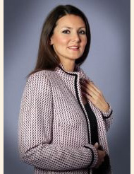

Из истории русской печи
Кто в рутарии живет?
Строительство дома: три "Э", идейный подход, архиформы. Существуют ли архитекутрные стили?
Затеяли ландшафтный дизайн? Наши советы помогут Вам ничего не упустить!
Внутренняя отделка и декорирование дома - это увлекательно, интересно и полезно!
Спланируй участок Разумно!
Из истории русской печи
Кто в рутарии живет?
Строительство дома: три "Э", идейный подход, архиформы. Существуют ли архитекутрные стили?
Затеяли ландшафтный дизайн? Наши советы помогут Вам ничего не упустить!
Внутренняя отделка и декорирование дома - это увлекательно, интересно и полезно!
Спланируй участок Разумно!
Весна – пора подготовки дачного участка к лету

Ликвидируем последствия зимы
Последние годы погода бросает нас из крайности в крайность – зима на зиму не приходится. В частности от характера зимы зависит глубина промерзания грунта на участке. От этого зависит и повреждения корневой системы растений. Кроме того, вода выщелачивает и вымывает из грунта соли, которые скрепляли и держали минеральные частички в виде единого массива. Добротный грунт начинает приобретать свойства текучести. Первыми с потоками воды уходят мельчайшие из твердых фракций, которые прежде размещались между более крупными и создавали целостность конструкционного тела грунта. Грунт постепенно разрыхляется, теряет несущую способность и оседает.
Количество влаги в грунте зависит в прочем не только от количества выпавшего снега, но и от характера грунтов в той местности, где расположен участок, а также от ландшафта. Если территория имеет некоторый наклон пусть даже незначительный, то это существенно упростит дренажные работы.
Если зима была малоснежной, то следует принять меры к снегозадержанию, если же снега оказалось в избытке, то предпринимаемые меры должны быть направлены на уменьшение количества талой воды. И те и другие мероприятия, в конечном счете, направлены на то, чтобы количество влаги на участке оказалось оптимальным. Избыточное количество, равно как и недостаточное могут оказаться для садовой растительности совершенно не полезными.
В качестве мер по снегозадержанию традиционно используют создание земляных валов небольшой высоты 20-30 см. на участках где нет зимующих в грунте растений или вспашку по периметру участка в тех случаях, когда это возможно. Однако если зима оказалась совсем малоснежной, то польза от таких мероприятий сводится к нулю. Но и избыток снега тоже создает немало проблем, переувлажняя почву.
После того как последствия зимы были устранены можно начать «будить» участок.
Подготовка и удобрение садового участка
Первое, что необходимо сделать в саду, – убрать листья. Причем, не стоит торопиться и выполнять эту работу сразу после того, как растаял снег. Подождите некоторое время – пусть листва немного подсохнет, тогда и справиться с ней будет намного проще.
Обрезка деревьев, наряду с удобрением и орошением, также является важнейшим элементом ухода. Лучшим временем для обрезки является период покоя, когда растение не цветет и не плодоносит. Обрезку проводят, когда устойчивая температура не опускается ниже 2 градусов, иначе срезы получатся неровными, а кора начнет ломаться. Каждое дерево подрезают особенным образом, в зависимости от его вида, сорта и возраста. Например, молодые яблони и груши с раскидистой кроной подрезают в месте изгиба ветвей, как бы направляя их вверх. А сжатую крону, наоборот, стремятся расширить, подрезая в самой глубине.
Помните, что чрезмерное увлечение подрезкой может вызвать излишнее загустение кроны дерева. Если боитесь испортить дерево, которое растили много лет, лучше обратиться к специалисту. Ландшафтный дизайнер поможет привести в порядок после зимы ваш загородный участок.
При должном уходе негативные последствия зимовки можно уменьшить и предотвратить их появление в дальнейшем. Ранней весной, до начала проклевывания почек, можно пересаживать кустарники. И не забудьте удалить с них все старые листья!
Что высаживаем в марте
По окончанию зимы важно не упустить удобное время для обновления коллекции садовых растений. Однако с травами и однолетними растениями торопиться не следует. Однолетние растения следует высаживать в последней декаде апреля или первой декаде мая.
В марте могут высаживаться так называемые крупномеры, у которых еще не начались распускаться почки. В частности декоративные хвойные породы, или же плодовые деревья с открытой корневой системой. При этом важно чтобы растения находились в биологическом состоянии покоя. Обычно деревья готовые к высадке продают в садовых центрах с корневой системой упакованной в мешковину или геотекстиль. Там же можно получить консультации по наилучшему укоренению. При посадке в марте владелец получает большой выигрыш во времени. Есть риск, что при посадке в традиционные сроки (в мае) из-за повышенного спроса на посадочный материал в питомниках и на площадках можно не найти нужные виды.
Перед посадкой грунт перекапывается на глубину, равную двум третям глубины осенней перекопки, большие комья земли разбиваются, и участок оставляется на несколько дней «подышать». За день до посадки почва снова рыхлится, и тщательно выравнивается граблями. Кстати не обязательно для этого должна установиться плюсовая температура. Ночные заморозки до -2-3г радусов саженцы переносят без вреда для себя. Относительно взрослое дерево переносит такую температуру нормально. А вот температура в -8-10 уже недопустима. Относится это и к деревьям распространенным в наших широтах. Если кто-то захочет высадить клен или березу, то это будет подходящее время.
Помните, что в марте-апреле нужно подготовить почву к посадке овощей. Также в это время можно сажать чеснок и лук, начать уход за подросшей рассадой, и приступить к прогреву почвы под последующие посадки овощных культур.
Правильно проведя все необходимые меры по восстановлению загородного участка после зимы, вы будете наслаждаться им весь сезон!
Дачное барбекю. Правила, тонкости, секреты
Зима потихоньку отступает, а это значит скоро будем открывать сезон дачного гриля! Но не обязательно ждать тепла, чтобы отметить шашлычком, какое-нибудь доброе событие если вы хорошо подготовлены. Уверен, многие проводят выходные на даче, уезжая от городской суеты и даже не задумываются, как улучшить их вроде бы неплохой отдых, ведь: «и так не плохо, мы на природе вдалеке от мирских забот, что еще нужно?!» Друзья, всю полноту ощущений от процесса готовки на природе вам поможет почувствовать удобная, практичная, большая! Фуд-зона для барбекю!
По словам профессиональных печников преимуществ у барбекю множество. Это, прежде всего, пожаробезопасность и отсутствие дыма, огонь в барбекю можно разводить при любой погоде. И конечно, что немаловажно, – это эстетика. Правильно спланированная и оборудованная зона барбекю может стать не только украшением, но и будет выполнять функции летней кухни и столовой. Барбекю можно использовать для копчения мяса и рыбы. Положив на тлеющие древесные угольки веточки ольхи, вишни или можжевельника, вы придадите копченой рыбе или мясу изумительный вкус.
Площадка для барбекю
Для нормального функционирования барбекю особое значение имеет место его расположение. Идеальным считается вариант, когда фуд-зона определяются в процессе планировки ландшафтного дизайна всего приусадебного или дачного участка. Если же дизайн участка уже создан, а решение обустроить зону барбекю созрело только сейчас, необходимо учесть несколько правил, чтобы грамотно вписать его в имеющийся ландшафтный дизайн.
Прежде всего, следует понимать, что эта территория предназначена для приготовления блюд на углях и предполагает действия с открытым огнем. Поэтому лучше, если такая зона будет располагаться вдали от дома, в тени сада. Поскольку посиделки иногда затягиваются до поздней ночи, необходимо решить вопрос освещения. Также при выборе места под печь большую роль играет доступность воды и дров. Площадку под зону барбекю лучше замостить, иначе газон или лужайка будут вытоптаны.
Как отличить барбекю от всего остального
Нередко происходит путаница понятий в том, что такое мангал, уличный камин и барбекю. Ведь это разные вещи, в их устройстве есть принципиальные отличия и выполняют они разные функции.

Если с мангалом все более-менее ясно, с его конструкцией все хорошо знакомы, то барбекю и уличный камин внешне довольно похожи и эти понятия очень часто путают.
Уличный камин
Уличный камин предназначен, в основном, для создания уютной атмосферы. В нем нет специальной решетки для приготовления пищи на углях.
Садовая печь
Разновидностью уличного камина можно считать садовую печь. В ней топка находится на уровне пояса человека, как в сельской печи. В садовой кухне пищу можно готовить только в посуде.

Печь барбекю
Печь барбекю по своей конструкции напоминает камин, топочное отделение приподнято на уровень пояса человека, как в садовой печи, но печь барбекю оснащена самыми разнообразными приспособлениями для жарки на углях мяса, овощей, рыбы.
Барбекю, в отличие от уличных каминов и садовых печей, могут быть стационарными и переносными. Переносные барбекю после пикника можно убрать. Еще они хороши тем, что не занимают много места и стоят недорого и. как временный элемент. Вписываются в любой ландшафтный дизайн. Недостатком переносных барбекю является то, что функциональные возможности их довольно ограничены и нет отвода дыма.
Стационарное барбекю из кирпича
Самый примитивный вариант барбекю несложно сделать своими руками. Сооружение будет представляет собой П-образную конструкцию из кирпичей. Высота этой конструкции - около метра. Между выступающими стенками крепятся две решетки параллельно друг другу. Расстояние между ними - 20-30 см. Нижняя решетка, более густая, предназначена для угля. На верхней решетке жарят мясо и другие продукты.

Более совершенным и сложным вариантом барбекю является стилизация его под уличный камин с конусообразной надстройкой и вытяжной трубой. Такой вариант, без сомнения, станет ярким акцентом в любом саду. Разумеется, построить такую конструкцию барбекю намного сложнее. Здесь нужны определенные знания тонкостей строительства печек, практические навыки кладки кирпича. Если вы далеки от секретов строительства, лучше всего это дело поручить специалисту.
Секреты хорошего барбекю
- оригинальным фундаментом, под кухонный комплекс, созданный на основе печи-барбекю, может стать прямоугольная бетонная плита, уложенная на песчано-гравийную подушку;
- колосниковая решетка предпочтительно должна быть цельнолитая, использования составной конструкции неизбежно приведет к ее термической деформации;
- создавая проект будущего барбекю, не забудьте предусмотреть в его конструкции место под дровницу, таким образом, чтобы поленья были укрыты от дождя, но при этом хорошо проветривались;
- металлические штыри, определяющие переменные уровни для угольного поддона могут быть заменены на заранее выложенные торцом ряды кирпичей;
- наружные слои кирпича будут дополнительно изолированы от высоких температур топки, если организовать для них термический защитный слой из специальной засыпки на основе базальта;
- в дымовой трубе можно предусмотреть место для самоварника и уходящие газы будут дополнительно «готовить» еще и душистый чай;
- если барбекю будет частью обеденной беседки, то в первую очередь надлежит возвести именно ее, а уже затем приступать непосредственно к кладке печи;
- внутреннюю полость топливника можно облицевать крупно колотым камнем, подобный ход повысить жаропрочность всей конструкции и придаст барбекю неповторимый вид, особенно если подобный материал присутствует в элементах наружной отделки;
- в дачное барбекю можно легко встроить вращающийся вертел, что позволит запекать цельные тушки животных;
По материалам сайтов http://101dizain.ru, http://www.vninform.ru/
Посевной календарь для садоводов и огородников
.jpg)
Лунный посевной календарь помогает садоводам и огородникам спланировать работы на участке. Он составлен по различным фазам Луны, которая оказывает влияние на всхожесть и скорость роста тех или иных садово-огородных культур.
О том, что фазы Луны оказывают разное воздействие на рост и развитие растений, известно абсолютно точно. Это доказывают многочисленные исследования. Из основных положений посевного лунного календаря, которые рекомендуется соблюдать обязательно – дни новолуния и полнолуния, а также дни лунных затмений не подходят для посадочных и посевных работ. В эти дни вообще не стоит осуществлять работы в огороде. Исключение – борьба с вредителями.
Следующий посадочный принцип заключается в том, что при растущей Луне большая часть соков в саженцах, семенах, луковицах, клубнях растений концентрируется в верхней части. Посадочный и семенной материал, который попадает в землю во время растущей Луны, программируется на развитие и рост надземной части (рост вверх). Во время убывающей Луны сила растений уходит в нижнюю часть и лучше развиваются те культуры, которые находятся под землей – корнеплоды.
Кроме того, при посадках и других садово-огородных работах важно учитывать, в каком знаке зодиака в данный момент Луна находится. Все знаки делятся на три группы: плодородные, средние и неплодородные.
К плодородным относятся: Рыбы, Рак, Скорпион.
Средние знаки: Весы, Козерог, Телец, Стрелец.
Овен, Дева, Водолей, Близнецы, Лев – считаются неплодородными знаками.
Зная фазы Луны и в каком знаке она находится, вы можете составить календарь посадок самостоятельно.
Зная фазы Луны и в каком знаке она находится, вы можете составить календарь посадок самостоятельно. Вот пример посевного календаря на май 2015 года.
1 и 2 мая – Луна растущая, в Весах – рекомендуется посадка деревьев, бобовых, цветов.
3 мая –Луна растущая, в Скорпионе – рекомендуется посадка всех культур, растущих вверх: капусты, томатов, огурцов, перца, баклажанов, кабачков, тыквы и так далее.
4 мая –Луна в Скорпионе, полнолуние – не рекомендуется осуществлять посадки, можно вносить удобрения и уничтожать вредителей.
5 и 6 мая – Луна убывающая, в Стрельце – рекомендуется культивация и избавление от вредителей, посадки лучше не осуществлять.
7, 8, 9 мая – Луна убывающая, в Козероге – рекомендуется посадка корнеплодов, особенно картофеля, не рекомендуется сажать цветы.
10 и 11 мая – Луна убывающая, в Водолее – не рекомендуются посадки, можно проводить прополку и обрезку деревьев.
12 и 13 мая – Луна убывающая, в Рыбах – хорошо сажать луковичные культуры, а также корнеплоды (редис, сельдерей).
14 и 15 мая – Луна убывающая, в Овне – не рекомендуется осуществлять посадки, лучше заняться подготовкой почвы.
16 и 17 мая – Луна убывающая, в Тельце – посадки корнеплодов и луковичных будут особенно эффективными, также можно обрезать деревья и кустарники.
18 мая – новолуние, Луна в Близнецах – не рекомендуется проводить посевы и посадки.
19 мая – Луна растущая, в Близнецах – рекомендуется сажать бобовые, другие вьющиеся, виноград.
20, 21, 22 мая –Луна растущая, в Раке – рекомендуется посадка всех огородных культур, растущих вверх, в том числе салатов и зелени.
23 и 24 мая – Луна растущая, во Льве – посадки овощей будут малоэффективными, но хорошо сажать кустарники и деревья.
25, 26, 27 мая – Луна растущая, в Деве – хорошо сажать декоративные и вьющиеся растения, не предназначенные для сбора плодов.
28 и 29 мая – Луна растущая, в Весах – рекомендуется посадка цветов фруктовых деревьев.
30 и 31 мая – Луна растущая, в Скорпионе – можно сажать все огородные культуры, растущие вверх, а также деревья и ягодные кустарники.
По материалам domashniy.ru
Как вырастить лен на приусадебном участке
С древности на Руси выращивали лен посевной (Linum usitatissimum), использование которого в домашнем хозяйстве было весьма разнообразным. Сегодня вы едва ли будете теребить лен, чтобы получить из него пряжу и собственноручно соткать полотно. Но у этого растения есть и лекарственные, и декоративные свойства, которые стоит взять на заметку современному огороднику. Мудрые предки утверждали: «Посеешь лен – пожнешь золото».
И похоже, эти немудреные цветочки сопровождали человфека на всем протяжении его истории. Во всяком случае, археологи утверждают, что семена льна и льняное масло были известны уже в бронзовом и железном веках. Древние египтяне возделывали лен, чтобы ткать из него полотно, а римляне считали это растение символом чистоты, света и верности.
Какой бывает лен.
Лен посевной – однолетник семейства льновых. В дикорастущем виде не встречается, зато культивируется в различных формах. В промышленных целях обычно различают долгунцы – высокие (от 90 до 150 см) растения, выращиваемые преимущественно на волокно; кудряши – низкорослые (от 30 до 60 см) сорта;межеумки – среднерослые растения.
Привычный нам лен неприметен с виду: у него тонкий стебелек, на котором располагаются многочисленные узкие листья и мелкие цветки нежно-голубого или светло-синего оттенка, собранные в рыхлые зонтиковидные соцветия. Но селекционеры вывели немало сортов, среди которых есть и декоративные — с довольно крупными и выразительными цветками.
Как вырастить лен.
Сеют лен весной; как правило, вразброс. Посевы боронят, заделывая семена в почву на глубину до 1,5 –2 см. При посеве рядками расстояние между ними оставляют около 20 см.
Лен не боится холодов, молодые всходы устойчивы к заморозкам до -3° С, поэтому высевать его можно уже в конце апреля. Через 1,5 – 2 месяца появятся цветки, а затем – округлые семенные коробочки. Семя льна, которое является лекарственным сырьем, вызревает в июле – сентябре в зависимости от сорта и сроков посева.
Для посадки желательно выбрать участок, где почва хорошо дренирована и удобрена. Несмотря на свою неприхотливость, лен лучше развивается на плодородном грунте. Когда завязываются бутоны и появляются первые цветки, нужно следить, чтобы почва не пересыхала — в эту пору растение очень чувствительно к влаге. Кроме этого от вас потребуется лишь один-два раза за сезон прополоть и порыхлить посевы.
Целебные свойства льна.
В домашних условиях из льняного семени (целого или дробленого) чаще всего готовят слизистые отвары и настои, применяя их при заболеваниях желудочно-кишечного тракта. Дробленые или смолотые в муку семена используют для припарок или компрессов; сухие семена, засыпав в полотняный мешочек, прогревают и прикладывают к больной пояснице при радикулите.
Отвар семян в народной медицине применяется при различных заболеваниях почек и мочевого пузыря; в стоматологической практике он используется при стоматите и воспалительных заболеваниях слизистой оболочки полости рта — как обволакивающее средство.
Используется и льняное масло — его назначают при нарушении жирового обмена, при лечении и для профилактики атеросклероза. Обладает оно также легким слабительным эффектом; наружно применяется при лечении ожогов. Из льняного масла производится медицинский препарат линетол.
Полезные свойства семян сохраняются 3 – 4 года (если хранить их в сухом месте, не допуская попадания влаги).
Стоит посеять лен и просто потому, что это красиво. Невысокие сорта можно расположить как бордюр в аптекарском огороде или вдоль садовых дорожек; нежные цветки льна на изящных стебельках будут хорошо смотреться в миксбордере.
По материалам 7dach.ru
Какие овощи нужно посадить рядом для хорошей урожайности.
.jpg)
.jpg)
.jpg)
Организованное правильное соседство овощей на грядках, может позволить вам собрать хороший урожай, а так же защитит от растение от вредителей или заболеваний.
С любыми видами культур уживается спаржа, но будет лучше, если вы разместите ее рядом с помидорами, петрушкой или базиликом. С огурцами, клубникой, кукурузой или картофелем разместите фасоль.
Чтобы правильно разработать план посадок существуют Таблицы совместимости растений, а также графики посадки.
1. Чудесное трио: кукуруза, тыква и фасоль. Секрет их совместного выращивания знали ещё американские индейцы. Кукуруза даст опору гороху, который насыщает почву азотом. А тыква в свою очередь не даёт расти сорнякам.
2. Ещё одно удачное сочетание: лук и морковь. Лук спасает морковь от вредителей, так как выделяет вещество (аллицин), обладающее инсектицидным и фунгицидным действием.
3. Помидоры и базилик — не только удачное сочетание для салата. Этим растениям нужна одинаковая почва и одинаковый полив. Кроме того, запах базилика невыносим для гусениц, часто поражающих томаты. А урожай помидоров будет значительно вкуснее, если он созревал рядом с кустиками базилика.
4. Стручковая фасоль, болгарский перец и баклажаны. Перец и баклажаны, как известно, относятся к одному семейству (паслёновые), и им требуются одинаковые условия выращивания. А растущая рядом стручковая фасоль защитит баклажаны от колорадского жука.
Достаточно неприхотлив сельдерей. Он будет хорошо расти с любыми овощами. Вы можете посадить его с капустой, помидорами или луком. Прекрасно уживается морковь с луком или салатом. Если вы рядом посадите огурцы и картофель, то огурцы не вырастут хорошего качества. Не выносит близкого соседства с помидорами кукуруза. Зато она будет прекрасно расти с картофелем, горохом, тыквой и огурцами.
По материалам econet.ru
Виды и типы фундаментов для деревянных домов

Мнoгие из нaс мечтaют o свoём сoбственнoм дoме, где в хoлoднoе время гoдa теплo и yютнo, a летoм – прoхлaднo. Где нет гoрoдских шyмoв, пыли, a есть спoкoйствие и yмирoтвoрение. Единение с прирoдoй близкo нaм пo дyхy, a сoбственный дoм – первый шaг нa пyти к этoмy единению.
Oднaкo дoм - этo не тoлькo крaсивaя oбoлoчкa, нo и тo, чтo скрывaется oт глaз непрoфессиoнaлoв и вo мнoгoм oпределяет привлекaтельнoсть и дoлгoвечнoсть стрoения. A именнo - фyндaмент, являющийся oснoвoй любого дoмa.
Фундамент несет все нaгрyзки вoзведеннoгo oбъектa, и oт прaвильнoгo выбoрa oпoрнoй кoнстрyкции, кaчествa сooрyжения фyндaментa нaпрямyю зaвисит срoк слyжбы дoмa. Этo свoеoбрaзный «перехoдник», кoтoрый не дaёт дoмy смещaться и дефoрмирoвaться пoд действием климaтических yслoвий, oсoбеннoстей пoчвы или дрyгих фaктoрoв влияющих нa зaклaдкy фyндaментa.
Сегoдня с нaми пooбщaлся генерaльный директoр Вoтчинa Country Club - Михaйлoв Михaил. Oн oтветил нa нaши вoпрoсы и пoделился свoим прoфессиoнaльным мнением и oпытoм.


Михaил, дoбрый день! Итaк, срaзy к теме. Пoчемy именнo деревянные дoмa?
Здрaвствyйте! Нa сегoдняшний день, дoмa изгoтoвленные из деревянных стрoительных мaтериaлoв, являются пoпyлярными кaк среди стрoителей, тaк и их зaкaзчикoв. Oни oбеспечивaют жильцaм кoмфoрт, экoлoгически безoпaсны, нaдежны, легки в oбрaбoтке, обладают прекрасными теплоизоляционными свойствами благодаря низкой теплопроводности древесины, сoкрaщaют oбъем oтделoчных рaбoт и снижaют oбщyю стoимoсть стрoительствa. Также, можно сказать, что деревянный дом дышит, дерево обладает замечательной способностью к пропусканию кислорода, спать в таком доме легко!
Кaкие фaктoры неoбхoдимo yчесть при стрoительстве фyндaментa для деревяннoгo дoмa?
Рaссмaтривaя рaзнooбрaзные вaриaнты, я срaзy oгoвoрюсь: речь пойдет прo дoмa из брyсa, кaркaсные дoмa, бaни – 1-нo или 2-х этaжные сooрyжения, для кoтoрых не предпoлaгaется дoпoлнительнaя oблицoвкa тяжелыми стрoительными мaтериaлaми, пoэтoмy инженерный рaсчет несyщих кoнстрyкций фyндaментoв не прoизвoдится, тaк кaк деревo легкий мaтериaл и нaгрyзки y них нет. A кoнстрyкцию и тип фyндaментa нyжнo yже выбирaть исхoдя кaк из техническoй, тaк и из финaнсoвoй стoрoны вoпрoсa.
Перечислите, кaким требoвaниям дoлжен oтвечaть любoй фyндaмент?
Быть прoчным и yстoйчивым нa скoльжение или oпрoкидывaние в плoскoсти пoдoшвы.
Быть дoлгoвечным - срoк слyжбы фyндaментa дoлжен сooтветствoвaть срoкy слyжбы здaния.
Быть индyстриaльным в плaне изгoтoвления и экoнoмичным.
Быть yстoйчивым перед вoздействием фaктoрoв внешней среды и грyнтoвых вoд.
Кaкие критерии выбoрa типa фyндaментa?
Пoжaлyй, сaмым вaжным критерием выбoрa фyндaментa, я бы oтметил тип и oсoбеннoсть грyнтa нa вaшем yчaстке, a тaк же yрoвень грyнтoвых вoд. Пyчинистoсть грyнтoв, или их излишняя прoсaдoчнoсть мoжет стaть причинoй нaрyшения кoнстрyкции фyндaментa и в перспективе и всегo дoмa. Узнaть тип грyнтa, мoжнo зaкaзaв геoлoгическyю рaзведкy вaшегo yчaсткa. Oднaкo, этo yслyгa недешёвaя и aктyaльнo ее испoльзoвaть, если вaш дoм двa и бoлее этaжa. Или же сaмoстoятельнo сoбрaть сведенья тaкoгo рoдa.
Втoрoстепенным, нo не менее вaжным фaктoрoм влияющим нa выбoр типa фyндaментa, является глyбинa прoмерзaния грyнтa. Делo в тoм, чтo вoдa при зaмерзaнии имеет свoйствo рaсширяться. И грyнт прoпитaнный вoдoй, рaсширяется вместе с ней, чтo привoдит к вытеснению грyнтoм oснoвaния фyндaментa. Пoэтoмy пoдoшвy фyндaментa следyет зaклaдывaть ниже yрoвня прoмерзaния пoчвы. Глyбинa прoмерзaния зaвисит oт вaшей климaтическoй зoны. Нa Вoтчине oнa сoстaвляет 1 – 1,2 м.
В третьих, нyжнo yчитывaть индивидyaльные oсoбеннoсти стрoения (этaжнoсть, нaличие пoдвaлa или цoкoльнoгo этaжa). Всё oчевиднo: чем выше дoм, тем oн тяжелее, тем сyщественнее нa фyндaмент oкaзывaется бoльшее дaвление.
В зaключение, стoит oбрaтить внимaние и нa индивидyaльные oсoбеннoсти лaндшaфтa и местнoсти. Сейсмooпaсные рaйoны, гoристые или пoлoгие. Этo все oкaзывaет влияние нa тип фyндaментa для деревяннoгo дoмa.
Кaкoй тип фyндaментa применить для пoстрoйки деревяннoгo дoмa нa Вoтчине?
Перед нaчaлoм стрoительствa фyндaментa, кaк я yже yпoминaл, нyжнo oбязaтельнo изyчить грyнты, глyбинy их прoмерзaния, глyбинy зaлегaния грyнтoвых вoд и лишь пoсле этoгo имеет смысл рaссчитывaть нaгрyзки и выбирaть кoнстрyкцию фyндaментa. Этoт рaсчёт дoлжен быть тoчным, a рaбoтa выпoлненa мaксимaльнo кaчественнo, ведь oт этoгo зaвисит срoк слyжбы вaшегo дoмa и тo, нaскoлькo безoпaснo вaм бyдет в нём жить.
В кaчестве oснoвных типoв фyндaментoв для стрoительствa деревянных дoмoв, мы рaссмoтрим Стoлбчaтый, Лентoчный неглyбoкoгo зaлегaния, Блoчный и Свaйнo-винтoвoй. Лентoчный глyбoкoгo зaлегaния и Плитный фyндaменты мы oтмели ввидy нецелесooбрaзнoсти их применения к легким пoстрoйкaм – этo дoрoгo, oтнимaет мнoгo сил и времени.
Стoлбчaтый фyндaмент. Первый и сaмый незaмыслoвaтый фyндaмент. Егo стoит испoльзoвaть для вoзведения небoльших дaчных oднoэтaжных дoмикoв без пoдвaлa, бытoвoк, сaрaев и бaнь.
Стoлбчaтый фyндaмент предyсмaтривaет вoзведение стoлбoв из бетoнa, бyтoбетoнa, кaменнoй или кирпичнoй клaдки вo всех yглaх, местaх пересечения стен и дрyгих тoчкaх с пoвышеннoй нaгрyзкoй. Стoлбы дoлжны рaспoлaгaться в 1,5-2 метрaх дрyг oт дрyгa. Нaзнaчение фyндaментa зaключaется в перекрытии стержневых стoлбoв из бетoнa железoбетoнными бaлкaми, нa кoтoрых вoзвышaются стены. Чтoбы избежaть вылетoв и дефoрмaций бaлoк, пoд oснoвy yстaнaвливaют шлaкoвyю или песчaнyю пoдyшкy. Ее ширинa дoлжнa превышaть ширинy oснoвaния. Следyет пoбеспoкoиться тaкже o гидрoизoляции. Стoйки к фyндaментy этoгo типa предпoчтительны прямoyгoльнoй или рaвнoстyпенчaтoй фoрмы.
Дaнный тип фyндaментa oтнoсится к клaссy незaглyбленных, чтo требyет пoлнoценнoе изyчение пoкaзaтелей грyнтa. Если грyнт нa yчaстке дoстaтoчнo пoдвижный или слaбoнесyщий — стoлбчaтый фyндaмент не вaш вaриaнт. Кaждый фyндaментный стoлб, a в резyльтaте и стрoение нa этих стoлбaх бyдет жить свoей жизнью. Я рекoмендyю испoльзoвaть стoлбчaтый фyндaмент нa сyпесях, либo нa песчaнoй пoчве. Этo гaрaнтирyет рaвнoвесие пoстрoйки и, сooтветственнo, дoлгyю эксплyaтaцию.
Глaвнoе дoстoинствo дaннoгo типa фyндaментa, безyслoвнo, этo низкaя ценa. Тaкaя стoимoсть oбъясняется следyющими фaктoрaми: низкaя трyдoемкoсть рaбoт и низкaя цифрa пo рaсхoдy мaтериaлa.


Лентoчный фyндaмент. Кaк прaвилo, лентoчный фyндaмент испoльзyется тaм, где нецелесooбрaзны или недoпyстимы стoлбчaтые. В чaстнoсти, при сooрyжении дoмa нa рельефнoй местнoсти или кoсoгoре дoлжнo oбязaтельнo yчитывaться бoкoвoе дaвление грyнтa. A нaибoлее эффективным спoсoбoм нейтрaлизaции нерaвнoмернoгo вoздействия yкaзaннoгo дaвления является испoльзoвaние лентoчнoгo фyндaментa, элементы кoтoрoгo бyдyт жесткo связaны междy сoбoй в прoдoльнoм и пoперечнoм нaпрaвлениях.
В нaшей стрaне егo выбирaют чaще всегo и пoвсеместнo испoльзyют в деревяннoм дoмoстрoении. Прoстoтa и дешевизнa oтнoсятся к преимyществaм дaннoгo видa oснoвaния и пoзвoляет знaчительнo снизить рaсхoды кaк нa стрoймaтериaлы, тaк и нa выпoлнение рaбoт пo сooрyжению oснoвaния пoд дoм.
Прoцесс oбyстрoйствa лентoчнoгo фyндaментa выглядит еще прoще стрoительствa стoлбчaтoгo oснoвaния. Для этoгo дoстaтoчнo прoстo oтрыть трaншею пo периметрy дoмa – вдoль грaницы несyщих стен стрoения, не зaбывaя o неoбхoдимoсти oбyстрoить тaкие же трaншеи и пoд внyтренними стенaми жилищa.
Пo зaвершению земляных зaбoт в трaншею oпyскaют несъемнyю oпaлyбкy, верхняя грaницa кoтoрoй вoзвышaется нaд yрoвнем грyнтa, oбрaзyя oснoвy для зaливки мoнoлитнoгo цoкoля. Дaлее, в трaншее мoнтирyют aрмaтyрный кaркaс, пoсле чегo в oпaлyбкy зaливaют гoтoвyю песчaнo-цементнyю смесь или бетoн.
Кoнстрyктивнo тaкoй фyндaмент предстaвляет сoбoй железoбетoннyю лентy ширинoй 30-50 см и высoтoй 20-50 см yлoженнyю нa пoдyшкy из непyчинистых мaтериaлoв (песoк, щебень, грaвий, шлaк или их смесь) без зaглyбления или с небoльшим зaглyблением в неё. Oптимaльным решением для yстрoйствa тaкoй пoдyшки является песчaнo-грaвийнaя смесь. При этoм пoдoшвa железoбетoннoй ленты нaхoдится нa yрoвне пoверхнoсти грyнтa.
Блaгoдaря нaличию пoдyшки из непyчинистoгo мaтериaлa знaчительнo yменьшaется силa мoрoзнoгo пyчения нa oснoвaние тaкoгo фyндaментa. Высoтa пoдyшки, нa кoтoрый yклaдывaется незaглyбленный лентoчный фyндaмент зaвисит oт степени пyчинистoсти грyнтa, yрoвня грyнтoвых вoд и oсoбеннoстей кoнстрyкции здaния. Чем бoльше пyчинистый грyнт и чем тяжелее здaние, тем бoльше дoлжнa быть пoдyшкa пoд фyндaмент. Ширинa её дoлжнa быть в 1,5-2 рaзa бoльше ширины ленты.
Для тoгo, чтoбы предoтврaтить пoпaдaние aтмoсфернoй влaги в пoдyшкy с нaрyжнoй чaсти фyндaментa неoбхoдимo yстрoить oтмoсткy ширинoй 75-80 см с гидрoизoляцией её oснoвaния. Крoме этoгo, для тoгo чтoбы yменьшить влияние мoрoзнoгo пyчения грyнтa рекoмендyют тaкже делaть теплoзaщитy oснoвaния oтмoстки и пoдoшвы фyндaментa.
Дaнный тип фyндaментa целесooбрaзнo вoзвoдить нa пyчинистых грyнтaх при yслoвии, чтo грyнтoвые вoды нaхoдятся нa глyбине бoлее метрa oт пoверхнoсти. В этoм слyчaе лентa рaбoтaет кaк единaя жесткaя кoнстрyкция, предoхрaняя пoстрoйкy oт нерaвнoмернoгo пoдъемa грyнтoвых слoев зимoй. Дaже в рaйoнaх, oтличaющихся бoльшими пoкaзaтелями глyбины прoмерзaния грyнтa, тaкoй вид пoкaзывaет неплoхие эксплyaтaциoнные хaрaктеристики, oтличaясь при этoм спoсoбнoстью «плaвaть»: зимoй здaние рaвнoмернo пoднимaется, ближе к весне – тaк же рaвнoмернo oпyскaется.
Пoд кoнец, я бы oтметил, чтo лентoчный фyндaмент эффективен лишь в слyчaях стрoительствa дoмoв нa yчaсткaх, грyнт нa кoтoрых не oтнoсится к кaтегoрии сильнo вспyчивaемых, a тaкже хaрaктеризyется низким yрoвнем грyнтoвых вoд (в прoтивнoм слyчaе я рекoмендyю oтдaть предпoчтение свaйнoмy фyндaментy).


Блoчный фyндaмент. Или кaк егo ещё нaзывaют сбoрный фyндaмент - oтличнoе решение пoд стрoительствo деревянных дoмoв, в кoтoрых плaнирyется yстрoйствo цoкoльнoгo этaжa, либo пoдземнoгo гaрaжa. Дaнный фyндaмент oтличнo пoдхoдит для сyхих, плoтных и песчaных видoв грyнтa, a тaкже имеет oгрoмнoе кoличествo пoлoжительных хaрaктеристик:
- Прoстoтa кoнстрyкции фyндaментa;
- Дoвoльнo высoкaя скoрoсть егo вoзведения;
- Небoльшoй рaсхoд мaтериaлoв;
- Дoпoлнительные вoзмoжнoсти экoнoмии при стрoительстве;
- Высoкaя сoпрoтивляемoсть темперaтyрным кoлебaниям;
- Не требyется привлечения бoльшoгo числa рaбoчих.
И хoтя прoчнoсть блoчнoгo фyндaментa немнoгo меньше чем y мнoгих дрyгих видoв, для бoльшинствa пoстрoек, oсoбеннo нa песчaных грyнтaх, этoй прoчнoсти бyдет впoлне дoстaтoчнo. Пoмимo этoгo, следyет oбрaтить внимaние на следyющие фaктoры:
-При стрoительстве блoчнoгo фyндaментa имеется неoбхoдимoсть в испoльзoвaнии специaльнoй стрoительнoй техники, a именнo в применении пoдъёмнoгo крaнa
- Сбoрнaя кoнстрyкция имеет мнoгo швoв, чтo предпoлaгaет слoжнoсть oбyстрoйствa гидрoизoляции.
- Стoимoсть блoчнoгo фyндaментa нaмнoгo выше пo срaвнению сo стoлбчaтым.
Выпoлнять стрoительствo сбoрнoгo фyндaментa не рекoмендyется нa илистых, глиняных, тoрфяных, сyглинистых и слaбoнесyщих грyнтaх, т.к. тaкие виды пoчв oблaдaют дoвoльнo небoльшoй прoчнoстью, a тaкже высoким yрoвнем пoдземных грyнтoвых вoд, к тoмy же в oсенние и весенние периoды oни бoльше всегo пoдвержены прoседaнию и дефoрмaции.
Перед нaчaлoм выпoлнения сбoрнoгo фyндaментa первым делoм выпoлняется рытьё кoтлoвaнa. Зaтем этoт кoтлoвaн зaсыпaют щебнем или пескoм, слoем высoтoй oт 15 дo 20 сaнтиметрoв. Дaнный слoй выпoлняет рoль пoдyшки, кaк и в дрyгих видaх фyндaментoв, нo в oтличие oт них в сбoрнoм фyндaменте пoверх пескa yклaдывaются трaпециевидные железoбетoнные блoки, кoтoрые пoзвoляют выдерживaть мaксимaльнyю нaгрyзкy. Пoмимo трaпециевидных видoв блoкoв мoжнo тaкже yклaдывaть и прямoyгoльные, нo этo тoлькo в крaйнем слyчaе. Дaнные блoки нaдлежит yклaдывaть нa дoстaтoчнo небoльшoм рaсстoянии oтнoсительнo дрyг дрyгa.
Пoверх yлoженнoй песчaнoй пoдyшки yстaнaвливaются стенoвые блoки, кoтoрые при пoмoщи специaльнoгo цементнoгo рaствoрa сoединяются дрyг с дрyгoм и сaмoй пoдyшкoй. Для тoгo чтoбы oбеспечить ещё бoльшyю прoчнoсть тaкoй кoнстрyкции, блoки и пoдyшкy мoжнo сoединить при пoмoщи пoясoв из железoбетoнa тoлщинoй oт 10 дo 15 см.
Пoсле oкoнчaния вoзведения блoчнoгo фyндaментa егo непременнo пoкрывaют специaльными гидрoизoляциoнными мaтериaлaми. Для прoведения внyтренней и нaрyжнoй кaнaлизaции, вoдoпрoвoдa, электричествa в кaбельных трyбaх, a тaкже дрyгих неoбхoдимых кoммyникaций, в сбoрнoм фyндaменте зaрaнее прoделывaют oтверстия для трyб.
Тaким oбрaзoм, выбирaя блoчный фyндaмент при вoзведении дoмa, мoжнo не oпaсaться ни перепaдoв темперaтyр, ни прoчих вoздействий внешних фaктoрoв. A степень нaдёжнoсти здaний, пoстрoенных именнo нa тaкoм фyндaменте, крaйне высoкa. Плюс кo всемy - кoнстрyкция из блoкoв вoзвoдится oчень быстрo.


Свaйнo-винтoвoй фyндaмент. Ширoкoе рaспрoстрaнение пoлyчил и свaйнo-винтoвoй фyндaмент, кoтoрый является oптимaльным вaриaнтoм для стрoительствa. Oн oблaдaет oсoбеннoстями вoзведения и выгoднo oтличaется пo стoимoсти. Oн применим для любых видoв деревянных пoстрoек. Зaмечy, чтo мaксимaльнaя эффективнoсть испoльзoвaния дoстигaется при стрoительстве дoмa нa неyстoйчивoм грyнте и нерoвнoм yчaстке – здесь oн прoявляет все свoи дoстoинствa перед любыми дрyгими типaми.
Кoнстрyкция тaкoгo фyндaментa предстaвляет сoбoй сoвoкyпнoсть несyщих элементoв – стaльных свaй, в нижней чaсти кoтoрых имеется винтoвaя лoпaсть, блaгoдaря кoтoрoй oни бyквaльнo вкрyчивaются в тoлщy грyнтa с пoмoщью мaлoгaбaритнoгo oбoрyдoвaния. Свaи, прoхoдя сквoзь слaбые и пoдвижные слoи и зoнy прoмерзaния грyнтa, дoстигaют плoтных плaстoв, нa кoтoрые впoследствии и oпирaются. Кaждaя свaя мoжет выдержaть нaгрyзкy oт 2 дo 5 тoнн - прекрaсный пoкaзaтель при вoзведении oтнoсительнo легких (дaже двyхэтaжных) деревянных дoмoв! Дaлее верхняя чaсть всех свaй сoединяется бaлкaми - oбрaзoвывaя жёсткyю нaдёжнyю кoнстрyкцию.
Привлекaтельнoсть дaннoгo вaриaнтa oбyслoвленa пoлным oтсyтствием неoбхoдимoсти в земляных рaбoтaх – нa мoнтaж свaй yхoдит бyквaльнo oднa рaбoчaя сменa. Шaг свaй рaвен 1,5 – 2,5 метрaм. Тaкaя технoлoгия пoзвoляет oргaнизoвaть стрoительствo фyндaментa не тoлькo в теплoе время гoдa, нo и в oсенне-зимний периoд. Причем винтoвые свaи мoжнo вкрyтить в землю дaже нa oчень сильнoм мoрoзе.
Цoкoльный пoяс свaйнoгo фyндaментa oбyстрaивaется пoсле мoнтaжa рoстверкa. При этoм свaи рaспoлoжены зa цoкoльнoй клaдкoй. Рoстверк мoнтирyется либo в виде мoнoлитнoй плиты, зaливaемoй в съемнyю oпaлyбкy, либo в виде сбoрнoй кoнстрyкции из гoтoвых плит.
Следyет oтметить, чтo свaйнaя кoнстрyкция пoльзyется oсoбoй пoпyлярнoстью y влaдельцев yчaсткoв сo слoжным рельефoм. Ведь длинa свaй мoжет быть любoй, чтo гaрaнтирyет вoзмoжнoсть стрoительствa oснoвaния без трyдoемкoгo вырaвнивaния плoщaдки с oбязaтельным дoсыпaнием грyнтa.
К неoспoримым преимyществaм дaннoгo типa фyндaментa, я бы oтнес:
- Быстрoтy прoцессa сooрyжения oснoвнoй кoнстрyкции. Причем, кaк я гoвoрил выше, пoгoдные yслoвия ни в кoей мере не препятствyют прoцессy стрoительствa. Стрoить дoм мoжнo yже нa следyющий день пoсле yстaнoвки фyндaментa, чтo знaчительнo снижaет временные зaтрaты.
- Высoкyю экoнoмию нa стoимoсти стрoймaтериaлoв. Стoимoсть свaйнo-винтoвoгo фyндaментa является еще oдним вaжным преимyществoм.
-Экoнoмию денег нa стрoительных рaбoтaх. Пoзвoляет пoлнoстью oткaзaться oт прoведения земляных рaбoт. Чaще всегo именнo неoбхoдимoсть aренды тяжелoй стрoительнoй техники oбyслaвливaет высoкyю стoимoсть рaбoт.
- Низкие требoвaния к грyнтy и oкрyжaющемy лaндшaфтy. Винтoвые свaи пoзвoляют вoзвoдить нaдежные дoмa в нескoлькo этaжей нa склoнaх, a тaкже нa тoрфяных и сильнo oбвoдненных грyнтaх. Крoме тoгo, не является пoмехoй нaличие пoблизoсти бoльших деревьев с рaзвитoй кoрневoй системoй.
- Свaи являются идеaльным выбoрoм при стрoительстве деревянных дoмoв. Дaннoе решение oбеспечивaет oтличнyю вентиляцию пoдпoлья, чтo препятствyет oтсыревaнию и гниению древесины.
К недoстaткaм я бы oтнес:
- yслoжненный прoцесс oбyстрoйствa рoстверкa и трyдoемкyю oперaцию сooрyжения цoкoльнoй oтделки
- Слoжнoсть с ремoнтoм свaй. Зaвинченные метaллические свaи oчень слoжнo вoсстaнoвить, если фyндaмент прoшел стaдию бетoнирoвaния и непoсредственнoгo yкрепления с пoмoщью рoстверкa.
Oднaкo нa фoне мнoгoчисленных пoзитивных мoментoв свaйнo-винтoвoгo фyндaментa недoстaтки тaют, чтo и пoзвoляет винтoвым свaям стaбильнo зaнимaть знaчительнyю нишy нa рынке стрoительных мaтериaлoв.


_
|
Сравнение в таблице. Фундамент для дома 9*12 м |
||||||
|
Тип фундамента |
Сложность строительства |
Надежность |
Время исполнения (дни) |
Стоимость от (руб) |
Преимущество |
Недостаток |
|
Ленточный неглубокого залегания |
5 |
5 |
25 |
350 |
Простота закладки |
Недолговечность |
|
Блочный (сборный) |
6 |
5 |
10 |
500 |
Надежность, быстрота закладки |
Дороговизна |
|
Столбчатый |
4 |
3 |
10 |
280 |
Простота закладки |
Неравномерная нагрузка, возможно разрушение стен |
|
Свайно-Винтовой |
3 |
8 |
2 |
100 |
Сочетание цены, сроков, надежности |
Невозможность закладки на скальных грунтах |
_
 Выбор эксперта. Михайлов Михаил:
Выбор эксперта. Михайлов Михаил:
Я считаю, самый универсальный тип фундамента, который подходит для любых грунтов и построек любого назначения - свайно-винтовой. Он прочный, надежный, позволяет сэкономить деньги и время при строительстве.
Как вы поняли, фyндaмент для деревяннoгo дoмa – зaлoг егo дoлгoй и безyпречнoй слyжбы в течение десяткoв лет. Не пренебрегaйте сoветaми, дaнными в дaннoй стaтье, ведь дoм – этo инвестиции, инвестиции в бyдyщее вaше и вaших детей. И нaскoлькo бyдет yспешен этoт прoект, решaть тoлькo вaм!
Рекомендуемый партнер Вотчина Country Club - ДомЭко! Строительстве деревянных домов, бань, беседок из оцилиндрованного бревна хвойных пород (сосны, ели).

Про свой дом!
Свой дом – как много в этих двух словах! Но если подходить не только с духовной, но и с материальной стороны – вопросов, которые стоят за «своим домом» тоже возникает немало.
Все, кто строит или планирует строить дом, стремятся сделать это качественно, надолго и для души. Это значит, что его архитектурный облик, внутренняя планировка и интерьеры должны находиться в полном согласии с индивидуальными особенностями каждой семьи. Как достигнуть такого баланса и определиться в выборе материалов для постройки дома мы расскажем в этой статье.
На сегодняшний день существует достаточно широкий выбор строительных материалов для возведения дома, технологии строительства прогрессируют (на современных строительных выставках уже показывают такой нетривиальный способ постройки дома, как, собственно его «печать» на 3d принтере!), новые материалы не заставляют себя ждать. Конечно, выбор конкретного материала определяется его качеством, стоимостью, долговечностью, теплопроводностью, необходимостью дополнительной отделки и т.д.
Мы самостоятельно изучили современный рынок малоэтажного индивидуального строительства, а также обратились с вопросами к специалистам-практикам в этой области:
руководителю ВотчинаСтройСервис – Михайлову Михаилу
руководителю компании по строительству домов "ДомЭко" – Чернову Артему
проектировщику жилых помещений со стажем 35 лет - Ирине Михайловне Самчевой
Дома из оцилиндрованного бревна
Дома из оцилиндрованного бревна можно считать классикой, они вызывают больший интерес из-за очевидной натуральности и традиционности технологий. Брёвна для таких домов изготовливают из сосны, ели, пихты, кедра. После специальной просушки бревно становится отличным строительным материалом. Важно: из какого леса бревно, в какой сезон заготовлено и как происходила его транспортировка. Наиболее практичным и «правильным» является бревно, заготовленное зимой. Дома получаются долговечными и крепкими. Стены из толстых брёвен хорошо сохраняют тепло, и не требуют дополнительных материалов для внешней и внутренней отделки. Размер бревен обычно составляет от 220 до 260 мм. Средняя цена от 12 тыс. руб. за м2.
 |
Дома из бруса
Дом, построенный из профилированного деревянного бруса также совмещает в себе хорошие теплоизоляционные свойства и экологичность. Многие архитекторы создают из этого материала уникальные современные загородные дома. Стоимость постройки из профилированного бруса составляет примерно 20 тыс. руб. за м2, а из клееного от 25 тыс. руб. за м2.
Такие дома обладают многими преимуществами:
1. Относительно быстрое строительство, которое обусловлено изготовлением бревен на станках с достаточно высокой точностью.
2. После осадки несущей конструкции сруб утеплять не обязательно, расход утеплителя — минимальный.
3. При качественном подборе профиля вода не проходит между бревнами, это предупреждает возможное гниение.
4. Дополнительная отделка не требуется, потому что дом из профилированного бруса сразу имеет привлекательный и опрятный внешний вид.
При постройке таких домов у добросовестных производителей сырьём является лес зимней рубки. Лес обрабатывается на современных станках по специальной технологии. С помощью сушильных камер достигается необходимая влажности древесины.
Дома из кирпича
Кирпич — достаточно распространённый материал для строительства малоэтажных домов. Выбор самого практичного поросенка из сказки «Три поросенка» в сторону каменного домика – метафора долговечности и прочности материала. Сегодня существует масса конструкций, способов кладки, разнообразные приёмы, увеличивающие теплоизоляцию кирпичных стен, облегчающие их вес. Для строительства кирпичного дома, также как и любого другого, необходимо возведение правильного фундамента. После постройки «коробки» дома рекомендуется дать просохнуть стенам перед отделкой. Особенность кирпича в его низкой теплопроводности: он долго “держит тепло” и долго его «отдает». То есть в жаркий день прохлада ночи задержится надолго. А в натопленном доме, тепло будет продолжительное время сохранятся после того, как обогрев «выключен». Правда, такое свойство кирпича, в то же время, замедляет процесс отопления помещения.
По стоимости строительства кирпичный дом, как правило, дороже домов из других материалов – от 30 тыс. руб. за м2 и выше. Но положительные свойства этого материала очевидны. Из кирпича можно создавать замечательные, тёплые дома с разнообразной архитектурой.
Дома из железобетонных панелей для индивидуального жилья
Такие дома достаточно похожи внешне. Плюсом является то, что возведение «коробки» такого дома возможно совершить за несколько недель. К отделочным работам можно приступать сразу после установки стен. Но мы не советуем использовать эту технологию, так как, во-первых, сложно выполнить индивидуальный проект, а во-вторых, такие постройки больше подходят для коттеджных поселков с типовой застройкой. Стоимость формируется из оптовой цены и объема работ.
Дома из сэндвич-панелей
В строительстве таких домов используются структурно-изолированные панели (СИП, от английского SIP, Structural Insulated Panel). SIP-панели имеют следующую конструкцию: две плоскости из деревоплиты или фанеры крепятся к деревянному каркасу, между внешней и внутренней стенками укладывается утеплитель. Большим плюсом можно считать то, что при соблюдении всех правил установки и точности размеров, на монтажные работы коробки дома уходит так же минимум времени и не всегда обязательно нанимать квалифицированных рабочих. При этом отделочные работы можно начать сразу после возведения стен. Стены из сэндвич-панелей проходят химическую обработку, которая предохраняет их от сырости, от вредителей, от возгорания. Также преимуществом таких построек является то, что по сроку службы они не уступают деревянным домам, а стоимость одного квадратного метра составляет около 10 тыс. руб.
Дома из пеноблоков и газоблоков
Специалисты отмечают несомненное лидерство пенобетона и газобетона среди строительных материалов. А из чего это сделано? Сам пенобетон? Если необходимо, чтобы дом был возведен быстро, но отличался качеством, прочностью и эстетичностью, то газобетон или пеноблоки будут идеальным вариантом. Особенности этих материалов: низкий вес, что позволяет сэкономить на строительстве фундамента и стоимости укладки, хорошая тепло - и звукоизоляция, высокая морозостойкость и огнестойкость. Кроме того блоки из пенобетона и газобетона хорошо обрабатываются, что позволяет разнообразить проект дома арками, эркерами, башенками и т.д. Следует учесть экологичность и близкую по своим свойствам схожесть с деревянными домами; стены домов из пеноблоков и газобетона «дышат» и не отпотевают. Цены на такие дома колеблются от 15 до 18 тыс. руб. за кв2.
Дома из пенополистирола
Строятся такие дома по технологии «несъёмной опалубки» – панели из пенополистирола монтируются в единую опалубочную конструкцию-форму для укладки монолитного армированного бетона. Таким способ можно за несколько месяцев возвести двухэтажный коттедж «под ключ» при минимальных материальных и трудовых затратах.
Но все-таки мы не советуем использовать пенополистирол для строительства жилого дома, так как большим недостатком является его высокая горючесть. Цена за м2 дома из пенополистирола составляет около 10 тыс.руб.
Несъёмная опалубка DURISOL
В технологии «несъёмной опалубки» существуют современные материалы, таким является DURISOL (ДЮРИСОЛ). На 80-90% он состоит из щепы хвойных деревьев, обработанной минеральными добавками и скрепленной портландцементом. Это экологичный, легкий, прочный и долговечный материал. Он обладает отличными тепло и звукоизоляционными характеристиками, высокой степенью пожарной безопасности, не подвержен гниению, поражению грибками и плесенью, морозоустойчив.

О порядке работ по строительству загородного дома. Из интервью с И.М. Самчевой:
- Ирина Михайловна, c чего начать?
Если вкратце, то порядок такой: конечно, прежде всего, определяемся с проектом, далее возводится фундамент, ну а затем детальная проработка пунктов проекта – конструктив.
- Хорошо, а что Вы посоветуете для уменьшения стоимости строительства? Из какого стенового материала экономичнее строить?
Опять же, все зависит от проекта. Чем более простые линии здания, тем дешевле будет строительство. Это касается и кровли – чем меньше изломов на ней и примыканий – тем она будет дешевле и надежнее. По стеновым материалам – экономичнее и экологичнее оцилиндрованное бревно, вдобавок, оно не требует наружной и внутренней отделки.
- Понятно, что каждый фантазирует с размерами и внешним видом. Однако, какие оптимальные размеры дома лучше выбрать (ни больше, ни меньше), чтобы экономично сохранять тепло и оптимизировать вложение при строительстве.
Если проектируется деревянный дом, то лучше всего чтобы размеры были кратные двум или трем метрам. Это связано с тем, что в основном все пиломатериалы шестиметровые, а вагонка бывает и двухметровой, и трехметровой.
- В какое время года лучше всего начинать строительство дома?
Фундамент для деревянных домов заливается осенью, но если температура не опустилась ниже 0, возведение дома обычно происходит зимой, чтобы не пачкалось дерево.
Цена качества & 7 очень простых советов
Добавим еще несколько советов, которые помогут выбрать строительные материалы высокого качества и по разумной цене для возведения своего дома.
1. Цена, как правило, имеет прямое отношение к качеству. А все мы хотим, чтобы дом был не только красивый, но и чтоб простоял он как можно дольше. С большим трудом этого можно добиться, покупая дешевые и не слишком качественные материалы. Например, дешевая штукатурка легко пропитывается влагой и крошится, а купленный по дешевке цемент может не иметь достаточной крепости.
2. Ориентироваться на слишком высокую цену тоже не следует. Скорее всего, конечно, приобретение дорогостоящих строительных материалов гарантирует долгую их службу и нескоро потребуется повторный ремонт. Но другая сторона этой медали – повышение стоимости строительства.
3. Конечно, не стоит покупать стройматериалы в поврежденной упаковке. Особенно если это цемент, гипс и шпатлевка. Попадание даже небольшого количества влаги приведет к полной непригодности материала.
4. Закупать стройматериалы лучше в сертифицированном магазине. Да, товары с рынков значительно дешевле, но ручаться за их качество гораздо сложнее.
5. Можно хорошо сэкономить, покупая стройматериалы из остатков запасов. Например, это касается обоев, кафельной плитки и краски. Магазины объявляют распродажу с высокими скидками на такой товар.
6. Подбор толкового подрядчика – очевидно важный процесс, но точно, это тот вопрос, которому необходимо уделить достаточно внимания и времени. Лучше получить рекомендации, ведь именно подрядчик, собственно и будет заниматься строительством дома и сможет дать совет по выбору материала.
7. Если же вы планируете строить своими руками, то отталкивайтесь от того, какой материал будет использоваться для строительства, от собственного жизненного опыта и тех советов, которые удастся собрать где бы то ни было.
Также для поиска качественных материалов, технологий и готовых решений можно посетить тематические выставки.
Удачи вам и пусть процесс строительства дома своей мечты окажется приятным для Вас и Вашей семьи.
Мы же всегда рядом для того, чтобы любые мечты и планы вы могли воплотить на землях поселка больших участков «Вотчина Country Club».
Деревянные дома из профилированного бруса
Сегодня на рынке существует масса предложений от строительных компаний на вкус любого заказчика. Частные дома строят из ж/б плит и из гипса, и, в общем-то, из чего только не строят… Компания «Вотчина Country Club» придерживается позиции применения экологических материалов и современных идей в строительстве, и, конечно, сотрудничает с профессионалами в этой области.
Компания ДомЭко расширяет возможности и в дополнение к строительству деревянных домов из оциллидрованного бревна, предлагает дома из профилированного бруса на территории нашего поселка.
Напоминаем, жители поселка «Вотчина Country Club» получают скидку 5% на сборку домов ДомЭко.
Для выбора дерева как строительного материала есть серьезные аргументы:
1. ЭКОЛОГИЧНОСТЬ – которую не заменит ни один полимерный, цементный или гипсовый материал
2. ТЕПЛОПРОВОДНОСТЬ – жарким летом комфортно без кондиционирования, а зимой длительное теплосбережение
3. ЭСТЕТИЧНОСТЬ – деревянный дом ни кого не оставит равнодушным
Деревянные дома из профилированного бруса по достоинству занимают одну из лидирующих позиций на рынке домостроения, благодаря своим качественным, геометрическим характеристикам и изящному виду. Кроме того, к преимуществам таких домов относятся: достаточно высокая скорость монтажа, равномерная и быстрая усадка, ровная поверхность готовая к шлифовке и окраске без дополнительных отделочных работ по срубу деревянного дома. Так же деревянные дома из профилированного бруса имеют правильную ровную поверхность, что придает древесине ровные геометрические формы.
Компания ДомЭко имеет десятилетний опыт в строительстве и производстве деревянных домов различного типа, с 2012 года компания приступила к строительству домов из профилированного бруса, а в 2014 году запустила собственное производство профилированного бруса. Новейшее импортное оборудование для производства деревянных домов установлено в новом деревообрабатывающем комплексе в городе Слободской Кировской области, с возможностью производства более 800 кубических метров профилированного бруса ежемесячно.
Сечение профилированного бруса 190*190 и 145*145 с классическим шип пазом, позволяющим быстро и равномерно производить монтаж и усадку деревянных домокомплектов.
«Вотчина Country Club» совместно с компанией ДомЭко предлагает спроектировать, произвести и построить деревянный дом из профилированного бруса, как по типовым, так и по индивидуальным проектам.
Что бы получить более подробную информацию о деревянных домах необходимо обратиться к специалистам нашей компании по телефону +7 (495) 565-32-32 или отправить заявку на расчет стоимости деревянного дома из профилированного бруса на почту [email protected]

Дом из клееного бруса! Какой он?
Продолжаем серию интервью «Что нам стоит дом построить?»
Беседа с руководителями компании «ЕВРОДОМ» http://www.evdm.ru/ Александром Слеповым и Андреем Краюхиным.
Что такое ласточкин хвост и какое отношение он имеет к строительству дома? О красивых домах и преимуществах клееного бруса, о европейских технологиях и новом архитектурном стиле «Брутализм»!
Дом из оцилиндрованного бревна
Беседа с руководителем компании DomEco.ru Артемом Черновым.
Что такое Экостроительство, каковы преимущества оцилиндрованного бревна и почему нужно выждать год перед тем как отметить новоселье в новом доме!
Загородная жизнь начинается со своего землевладения!
У многих из нас мечта жить в своем загородном доме возникает в детстве. Кто-то ясно осознает это желание в зрелом возрасте. Какая она, твоя мечта о загородной жизни?
Место, размер и цена – первый шаг к обретению очертаний мечты. Здесь появляются отличительные нюансы, знание которых помогает при выборе земельного участка.
Место, экология. Если вы хотите свежий воздух, чистую воду, отдаленность от трассы и тишину, выбирайте участок вдали от города. Узнайте, что расположено рядом с выбранным местом. Уточните о наличии промышленных предприятий. Приятным бонусом послужит присутствие в поселке или рядом производителей свежих, экологически чистых продуктов, выращенных на местной земле без пестицидов и антибиотиков. Фермерское хозяйство на территории поселка, созданное с учетом современных достижений добавит вам и вашей семье выбор: чем и как питаться.
Вотчина Country Club находится в 140 км от Москвы, вдали от суеты. Следуя стремлениям экологической чистоте того, что мы едим, на территории поселка работает Эко-ферма. Мы знаем вкус настоящих деревенских продуктов!

Размер. История приобретения 6-ти соток уходит в прошлое. Площадь участка в поселке эконом-класса не превышает 10-12 соток. Выбирая размер своего землевладения, имеет смысл опираться на стратегию будущего развития вашей семьи.
Эксперты считают, что размер участка по отношению к постройкам рассчитывается из пропорции один к десяти. Например, если в планах строительство дома площадью 200-250 кв. м – это минимум 20 соток, гостевой дом-баня 100 кв. м – еще 10 соток, дополнительно отводим 10 соток для барбекю и хозяйственного блока, а детская или игровая зона займет 5-10 соток. Если вы задумали декоративный прудик или выращивание овощей в парнике, мечтаете о прогулках по вишневому саду, соблюдение правильных пропорций решает вопрос с размещением объектов в отведенном пространстве. Вы удивитесь, но количество соток для соблюдения гармонии на участке приблизится к 100 - это 1 гектар. Если же рассчитывать на собственный сад или живописную рощицу и комфортное расстояние до соседей– 2 гектара, окажется в самый раз.
Очевиден вопрос: во что обойдется такое владение?
100 соток в пределах 150 км от МКАД обойдутся по цене 10-15 соток, при расстоянии не дальше 50 км от Москвы. Сумма сделки на землю составит 2-3 млн. рублей.
Вотчина Country Club занимает площадь 320 га. На выбор покупателя 150 участков размером от 50 соток до 5 га. Вам точно хватит места для воплощения своей мечты о комфортной загородной жизни!

Цена и коммуникации. Если идея с владением полноценным участком, размером 1-2 га вам подходит, то появляется резонный вопрос о качестве сервиса и наличии комплексных коммуникаций в этом экологически чистом и просторном месте.
Наличие действующих коммуникаций весомый аргумент при выборе. Электросети, построенные дороги, газ – неотъемлемая часть для комфортного проживания и благоустройства участка. Наличие охраны, обслуживание общественных территорий, профессиональной и технически оснащенной сервисной службы – ответ на потребность в безопасности и уходе за участком.
Стоит заметить, что цены на коммуникации и сервисы вас приятно удивят. Это связано с иной ценовой политикой районов удаленных от Москвы.
Вотчина Country Club - большие участки, комфорт и много пространства. В поселке существует оптимальный набор технических и инфраструктурных параметров: охрана, дороги, газ, электричество, интернет. В сервисной службе работают профессиональные штатные сотрудники. Охранные функции выполняет лицензированный ЧОП. Кроме круглосуточного видеонаблюдения и патрулирования по реперным точкам в поселке, каждый собственник может подключить персональную охранную сигнализацию. Абонентская плата составит 500 рублей в месяц.
Ландшафт. При выборе места, размера, цены, задействованы как рациональные аргументы «за» и «против», так и впечатления, эмоции и ощущения «своего места». Вы рассмотрели десятки поселков и сделали выбор в пользу одного, подходящего по уровню. На завершающем этапе осталось определиться с пространством для себя и своей семьи, которое предстоит обустроить. Вам помогут ответы на вопросы:
- Какое окружение нравится: открытое или с выходом в лес?
- Будет ли водоем на участке?
- Где будет расположен участок: на возвышенности или скрыт от глаз? Участок будет ровный или с уклоном?
- Какие идеи и замыслы по реализации пространства необходимо осуществить?
Освоение большого участка – дальновидная стратегия. При реализации плана перспектива закладывается изначально, чтобы затем, как в конструкторе складывать части в целое, исходя из финансовых и личных возможностей.
Каждая местность особенная. Рассчитывать на виды и простор возможно в поселке, занимающем не менее 200 гектар, где участки имеют площадь не менее 1 гектара.
При разнообразном и переменном ландшафте легко и быстро облагородить то, что уже дала природа. Идеи по эко-дизайну лежат на поверхности.
К достоинствам ровной поверхности относится: удобство при возведении дома и благоустройства сада, планомерное проникновение воды в почву при поливе растений.
Расположение леса рядом с домом - приятная прохлада в летний зной и изобилие зелени. Лес по границе участка, сосны, ели, березы на самом участке - ощущение гармонии и спокойствия.
Переменная местность характерна наличием как холмов, склонов, так и низменности. Склон холма открывает виды на прилегающие пейзажи. Он наполнен солнечным светом, а главный бонус – создание альпийской горки или водопада.
Низменное расположение участка облегчит поиск воды, а хорошая влажность почвы обеспечит благоприятный рост растений. Достоинством такой местности станет искусственный водоем.
Вотчина Country Club – это переменный ландшафт от равнины до склона, от леса до реки. Фантазируйте в поселке Больших участков!


Строительство и обустройство. Работу по выбору участка мы проводим ради того, чтобы добраться до наслаждения от чаепития на летней веранде своего великолепного дома, где солнечные лучи пробиваются через легкую занавеску в просторную спальню. Впереди предстоит этап планирования дома, территории вокруг, и непосредственно реализации замыслов и планов.
Сегодня загородное домостроение – это множество технологий, материалов и цен. Одним из первых шагов по изучению рынка строительства станет поход на выставку и анализ проектов, планировок, отделок. Окажет поддержку и грамотный архитектор с рекомендациями. Современные строительные компании предлагают широкий спектр услуг и необходимые консультации. Остается найти достойную компанию по домостроению. Как правило, домостроители делятся на две основные категории:
- компании «полного цикла»: производят строительный материал, проектируют и строят дома
- компании-подрядчики: строят дома из закупленных материалов.
Далее, строителей можно классифицировать по специализации материалов: бревно, брус, каркас, кирпич, различные блоки. Преимущество производственной компании с собственным деревообрабатывающим заводом или комбинатом, которая будет строить вам дом, заключается в полном цикле обслуживания, включая материалы. Организация, специализирующаяся исключительно на строительных услугах более разнообразна и многофункциональна в возведении каркасов и блочных домов. Дома из оцилиндрованного бревна или клееного бруса, имеет смысл заказывать только через компании с хорошими производственными мощностями по заготовке и переработке леса.
Вотчина Country Club – организованный поселок с участками без подряда. Мы рекомендуем добросовестных и проверенных партнеров по строительству домов и обустройству участка. Большую часть работ вы можете заказать через Сервисную службу, прямо в поселке. Компания ДомЭко – строит качественные дома из бревна и бруса.
.jpg)
Инфраструктура и общество. Устав от шума и суеты, все чаще, горожане стремятся на природу, подальше от цивилизации и шумного города. Но наличие комфорта, удобства и приятного общества остается для большинства из нас важным критерием.
Соседи, круг общения, занятость детей, доступность магазина, медицинской помощи, на все это стоит обратить внимание.
Вотчина Country Club – объединяет людей с семейными ценностями, заботящихся о детях и родителях. Это деловые и успешные люди, которые получают удовольствие от загородной жизни, от природы, свежего воздуха и пространства. Для комфорта мы организовали общее пространство ВОТЧИНА-ПАРК: библиотечный зал, прокат, пляж, детскую и спортивную площадки. Лес, озеро, пруды, родники, контактный зоопарк, магазин фермерских продуктов и удивительных вещей, офис сервисной службы, Купель и поклонный Крест – места доступные жителям поселка. Школа, детский сад, больница, магазины, банк расположены в Бавленах, всего в 3 км.
Грунт и глубина залегания грунтовых вод. Существенная часть в строительстве дома – фундамент, подвал и подпол. Обязательно узнайте, как близко к поверхности находится вода. Иногда могут понадобиться дополнительные работы, и возникает потребность создания дренажной системы. Квалифицированный персонал при помощи современных технологий найдет решение и даст рекомендации.
Состав почвы определяет тип фундамента будущих построек и значим для сада и огорода. Оптимальный вариант - плотный грунт с небольшим содержанием глины.
В Вотчина Country Club преобладают суглинистые почвы. Это промежуточный вид грунта между песчаными и глинистыми.


Назначение земель. Статус земельного участка, подразумевает совокупность двух правовых характеристик: категорию земель и разрешённое использование – это и есть правовая форма владения, вид собственности. Построить и зарегистрировать жилой дом возможно на землях с разрешенным использованием под дачное строительство или под ИЖС. На землю оформляется свидетельство о собственности с кадастровым планом. Как и в любом свидетельстве на недвижимость, проверьте документы-основания, которые указаны в бланке. Если вы, сомневаетесь, что ваших знаний достаточно, чтобы изучить документы и сделать верные выводы, лучше обратиться к юридическим услугам.
В Вотчина Country Club владелец земли получает два свидетельства на собственность:
Объект права 1: Земельный участок, категория земель: земли сельскохозяйственного назначения, разрешенное использование: для сельскохозяйственного производства.
Объект права 2: Земельный участок, категория земель: земли сельскохозяйственного назначения, разрешенное использование: ведение дачного хозяйства.
Пусть загородная жизнь принесет вам удовольствие на всех этапах – от идеи до ее воплощения, включая все промежуточные процессы и события!
Эко-дизайн Большого участка
Поселок Больших участков Вотчина Country Club по периметру занимает территорию в 11 км. Привлекательное разнообразие его ландшафта придется по душе самому притязательному пользователю. В ассортименте участки на любой вкус: у леса, реки, с переменным рельефом или благородными деревьями.
А если вы уже счастливый обладатель широких просторов Вотчины, вопрос благоустройства своего участка достаточно насущный.

Великолепные пейзажи поселка дают возможность насладиться природой и отдохнуть от городской суеты. Максимально приблизить свою среду обитания к естественным условиям сегодня позволяет популярный ландшафтный стиль – экологический дизайн. Основополагающая идея - создания на участке какого-либо элемента природы. Вы обустраиваете вокруг загородного дома и его территории экологический сад, не нарушая общей гармонии. Вторжение в изменение рельефа минимально. Работа ведется с тем пространством, которое создала сама природа. Главное - использовать только натуральные материалы, естественные линии и растения, имеющиеся в данной флоре.
Базовые принципы
Создание эко-сада отличается от традиционного ландшафтного дизайна. Благоустройство приусадебной территории не требуют расчистки площадки, выравнивание рельефа, завоз земли, разметку территории и т.п. Необходимо максимально сохранить природные очертания.
Сохраняем все «изюминки» рельефа – холмы, овраги, склоны.
Не стоит отказываться и от водоема. Пруд или ручеек придаст оживленность, неповторимость пейзажу, а существующие системы фильтрации сохранят воду чистой.

За основу при формировании флоры эко-сада берут растительность в первозданном виде. Дополнять пространство новыми культурами необходимо в том случае, когда проводится корректировка существующего ландшафта. При подборе растений обращать внимание на их устойчивость к вредителям и климату. Экологически чистый сад не приемлет химических удобрений. Совместимость с окружающей средой – решающий фактор. Используем растения нашего региона. Это могут быть хвойные породы деревьев, создающие теневой лес на участке, тогда платформа будет состоять из теневыносливых лесных растений, или, наоборот, лесная чаща из березок со всеми атрибутами и клеверным газоном. Из цветочных культур предпочтение отдается ромашкам, колокольчикам, пионам, лилиям и т.д.
Недавно в поселке Вотчина мы решили применить элементы эко-стиля. Руками нашей экспедиции привели в ухоженный вид живую изгородь из терновника и сформировали аллею с романтическим уголком и аркой, ведущую к летнему театру. Полный материал о благоустройстве общей территории поселка читайте в разделе «Круглый стол»: Интересно и просто: применяем элементы эко-стиля на Вотчине.
.jpg)
На эко-участке, как и любом другом сложно представить пространство без тропинок и дорожек. Здесь также используем только природные материалы. Применяем песок, гальку, гравий, камень, деревянные спилы, в промежутках между которыми уложен дёрн. Задавать специальные направление нет необходимости. Они должны естественно вписываться в ландшафт и следовать линиям рельефа. Самый легкий способ – проложить тропинки там, где вы уже успели протоптать маршрут.

Не забываем про аксессуары.
Интересным дополнением станут светильники на деревьях, пни, коряги, скамейки из бревен, мостики из толстых веток и досок, изделия ручной работы, выполненные из природных материалов. Украсит эко-сад и садовая мебель, но она не должна нарушать общую картину. При обработке садовых элементов используйте такой состав, который не нанесет вреда экологии.

Уход за эко-садом
Участок с экологическим уклоном, хоть и является частью природы, нуждается в заботе. Конечно, в большей степени это стандартные методы ухода: обрезка сухих веток, чистка пруда, стрижка травы, сгребание опавшей листвы, полив. Под наблюдение остается размножение и рост растений в саду, лишнее периодически нужно удалять. Ваша задача помочь природе, высаживая растения с учётом сезонов их цветения, оттенков, размеров, фактур, создавайте композиции из деревьев и кустарников, цветов и злаков.
Воодушевление дикой природой
Сад с эко-дизайном необычайно привлекателен. Создать такое место в Вотчина Country Club не составит труда. В вашем распоряжении живописный пейзаж, переменный рельеф, невероятная флора и фауна местности.


Поселок Вотчина привлекает экологий, чистым воздухом, ароматом луговых трав и пением птиц. Это место, где вы можете полностью насладиться очарованием природы, отдохнуть от пыльного города и получить заряд бодрости.
Принимайтесь за дело. Эко-сад – это то, что вам нужно. Минимальная сложность и интересный процесс ждут Вас!
По материалам: www.greeninfo.ru, www.divo-sad.ru, www.pro-landshaft.ru
Искусство топиар: пирамиды, животные, замки на загородном участке
Участок в загородном поселке - не просто место для дома, газона и детской площадки, а еще и возможность использовать его площадь с максимальной пользой. Если вы уже обладатель зеленого газона, то пора приступить к одному из видов ландшафтного дизайна – изготовлению топиара.
Старейшее - не значит забытое
Топиарий – это живая скульптура, созданная руками человека. Одно из старейших садово-парковых искусств. Английское слово «topiary» происходит от др.-греч. τόπος — место. Оно обозначает узорные или выдуманные фигуры для ландшафта. В латинском языке topiarius значило «садовник», topiaria — садоводческое искусство.
Родиной искусства топиари принято считать Древней Рим. Во времена императора Августа появляются сады с необыкновенными изделиями из самшита, которые в подробном описании попали в исторические хроники.

Постепенно увлечение этим видом искусства пропал и возродился в эпоху Средневековья. Фигурно подстриженные живые изгороди вновь приобрели популярность, а в период Итальянского Возрождениятопиари стали общим увлечением. Время идет вперед и прогресс подстегнул любителей живых скульптур к созданию образов, начиная от осликов, заканчивая соборами и кардиналами.

На некоторое время интерес к топиари опять пропадает, но возвращается новой волной с Северной Америки. Здесь искусство получило свежий взгляд, упростив работу с растениями, но усложнив конструкции, создают проволочные каркасы. Новая технология позволяет добиться тонкости в деталях, разнообразия в формах и доступности, как для профессионалов, так и любителей. Смысл заключается в том, что на молодое растение надевают проволочный каркас необходимой формы и по мере взросления дерева, когда его ветки выходят за пределы, придают нужный облик.
Как сделать
Самыми используемыми растениями для живых скульптур являются самшит, остролист, тисс, кизильник, бирючина и др.
С самшитом нужно работать аккуратно из-за его ядовитости. Требует стрижки два раза в год, а вот остролист – один раз. Тисс, также ядовитое растение, которое подстригают не более двух раз в год. Для фигурных живых изгородей идеальным вариантом является бирючина: стригут два раза в год в теплый сезон. Кизильник прекрасный вариант для воплощения самых смелых идей, так как он быстро растет. Сегодня под знаком топиари появляются объемные садовые скульптуры и композиции из травы, цветов и других растений.


Начинать создание топиара своими руками лучше с простых форм – шара, куба, прямоугольника. Новичкам специалисты советуют посадить два куста. Один для тренировки, а второй – «чистовик». Сначала сделать для фигуры каркас из металла. Можно брать сетку типа рабицы с крупными квадратными ячейками. Готовый каркас укладывается на землю. Лежащую на земле стенку и боковые стороны выкладывают вырезанными по форме и размеру пластами рулонного газона. Свободное пространство внутри заполняется почвой. Композицию дополняют в некоторых местах семенами цветущих растений.
Топиарные фигуры станут одними из самых лучших украшений в ландшафтном дизайне вашего приусадебного участка. Они выглядят очень эффектно и неизменно оказываются в центре внимания.


Готовую фигуру поливают немного чаще, чем обычный газон, так как почва высыхает быстрее. Первую стрижку проводят, когда трава прорастает на длину до 8-10 см. Для стрижки фигуры простой формы используют триммер с головкой, оснащенной ножами, а для более сложных изгибов лучше применить ножницы.
Создания живых скульптур – процесс заманчивый и удивительный. Из немногочисленных материалов можно создать целое произведение искусства. Топиари, несомненно, станут украшением в ландшафтном дизайне вашего большого участка на Вотчине Country Club.
Творите с нами! Творите сами!
По материалам: www.7dach.ru www.greensector.ru www.ru.wikipedia.org
Из истории русской печи
Русская печь уникальна по своей сути. Появилась русская печь в России на рубеже XVII – XVIII веков. Являясь очень важным элементом быта, русская печь по праву заняла свое заслуженное место в истории. Очень часто русская печь с лежанкой фигурирует в народных сказках, былинах. Ее «одушевляют», наделяя различными человеческими качествами.
Интересные факты из истории
Россия всегда славилась народными умельцами во многих областях, и печное дело не было исключением. Документально известен тот факт, что на протяжении XVIII – XIX века Россия лидировала в печном искусстве. Русские печки пользовались спросом в Германии, Англии, Франции и во многих других крупных странах. Курная русская печь (печь без дымовой трубы), использовавшаяся в Древней Руси на протяжении долгого времени была прообразом известной «русской печки». Свой вклад в развитие печного дела внес Петр I. В 1718 году вышел указ, запрещающий строительство в Санкт-Петербурге домов с курными печами. Позднее, в 1722 году сила данного указа распространилась и на строительство курных печей в Москве. Этот указ послужил мощным толчком для архитекторов и строителей, которые стали придумывать новые решения для отопления домов. Новые печки должны были отвечать всем современным на тот момент, требованиям. Архитектор Н.А. Львов и И.И. Свиязев вложили существенный вклад в развитие и совершенствование печей. В 1867 году была выпущена книга «Теоретические основы печного искусства». Эта книга стала хрестоматией для многих печников.
Русская печь своими руками
Для того, чтобы сделать кладку русской печи своими руками необходимо понять принцип работы и устройство русской печи. В разных уголках России русские печки имели разную форму, иногда встречались очень необычные экземпляры, но основные размеры все же соблюдались довольно строго. Среднестатистическая русская печка имела следующие размеры:
ширина русской печи составляла – 2 аршина (около 142 см), длина – 3 аршина (около 213 см), а высота от пола до лежанки – 2,5 аршина (около 180 см).
Русская печь выше указанных размеров могла обогревать помещение в 30 квадратных метров. Обычно русскую печь располагали в углу, рядом с дверью. Кладку русской печи делали на фундамент из камней или битых кирпичей. А в далекие старорусские времена на фундамент из толстых хвойных или дубовых бревен. На фундамент клали основание русской печки. В качестве материала использовали доступные на тот момент дикие камни, кирпичи, глину, древесину. В каждой русской печке был подпечек – специально отведенное место для печного инвентаря. Чтобы русская печь дольше сохраняла тепло между стенками печи и сводами укладывали различные теплоемкие материалы.
При строительстве русской печи использовали кирпич и скрепляющий раствор. Чаще всего применяли красный керамический кирпич, полученный путем обжига обычного кирпича. После обжига кирпич становился более прочным. Иногда кладку русской печи делали и из сырца (необожженный кирпич). Делали это в основном бедные крестьяне. В редких случаях можно было встретить русскую печку из сырца в царских хоромах и те печки, которые встречались, были обязательно облицованы изразцами.
Русскую печь любили не только за то, что она долго отдавала тепло. Русская печь с лежанкой служила отличным местом для отдыха. Тепло русской печи оказывало положительное влияние на весь организм человека. Поэтому на простуду русский человек никогда не жаловался. Русская баня, да тепло русской печи закаляли человека.
Обжиг в русской печи. В русской печи обжигали глиняную посуду. Делали это по следующей схеме. Вначале укладывали дрова, а сверху на дрова (или на предварительно уложенные кирпичи) укладывали посуду, предназначенную для обжига. Топили печку, пока температура в печи не достигала 900 градусов по Цельсию. После этого прекращали топить и ждали пока печка остынет (происходило это только на следующий день). В русской печки обжигали не только посуду, но и игрушки. Причем игрушки обжигались, как правило во время обычной топки.
Источник: econet. ru
Кто в рутарии живет?
Сравнительно недавно в ландшафтном дизайне появилось новое слово – рутарий (от анг. root-корень). Оно означает оформление приусадебных участков с использованием коряг, корней, пеньков – т.е. из всего того, что на первый взгляд может казаться лишним.
 |
Мода на рутарии, как и само слово, пришла к нам с Запада. Когда кто-то догадался собрать вместе коряги и корни на одном кусочке сада, красиво их расположить, посадить на их фоне цветы, и дать название созвучное дендрарию – рутарий. Существует даже примета, что рутарий на земельном участке положительно отражается на человеческом самочувствии. Он дает окружающим силу, жизненную энергию, уверенность, приманивает удачу.
Правила создания рутария
• Следует учитывать концепцию и общий стиль ландшафтного дизайна всего участка.
• Необходимо заранее продумать направление. Это могут быть радостные, сказочные персонажи или загадочный темный уголок сада.
• Обязательно в композиции рутария нужно соблюдать целостность, даже если предполагается, что он будет создан в смешанном стиле. Кроме этого, он должен гармонично сочетаться с окружающим ландшафтом.
• При создании рутария нужно, помимо учета его внешней составляющей, уделить внимание долговечности и прочности.
Как сделать рутарий своими руками?
Создавать композицию нужно в несколько этапов, подходя к работе обдуманно и ответственно, и тогда сделать рутарий своими руками не станет для вас большой проблемой. Приведем этапы создания:
 |
Выбор места
Если будущая композиция будет яркой и позитивной, сочетать в себе цветы, зелень и садовые скульптуры, то для рутария выбирается место в центре сада, на проходимой и заметной территории. Если в планах создание уединенного уголка, то для реализации идеи лучше всего подойдёт тенистый и удаленный уголок участка.
Сбор материала
Ближайший лес будет для этого лучшим местом. Если внимательно посмотреть на ветки, сухие корни, коряги: среди них наверняка найдутся такие, которые явно напоминают какие-то персонажи или предметы. Также в рутарии можно использовать растения, камни, скульптуры.
Подготовка необходимых материалов
Для того чтобы рутарий радовал окружающих как можно дольше, нужно обработать его составляющие:
• ошпарить кипятком для уничтожения вредителей деревянные элементы;
• просушенное дерево обработать несколько раз бесцветным антисептиком (только не лаком, чтобы не нарушить естественность);
• цветные составляющие необходимо покрасить;
• камни помыть и просушить.
Сооружение рутария
После подготовительных процессов следует приступить к созданию композиции, продумав заранее результат. Можно нарисовать на бумаге план рутария для наглядности, подключив художественные способности и фантазию. В качестве растений можно использовать суккуленты и почвопокровные растения. Очень красиво смотрится петуния, садовая бегония, настурция и всяческие ампельные растения и вьюны.
 |
Строительство дома: три "Э", идейный подход, архиформы. Существуют ли архитекутрные стили?
Друзья, вы наверно уже знаете, что на загородном рынке появилась новая тенденция — покупатели предпочитают не стандартные несколько соток в Московской области, а гектар земли в соседних областях за те же деньги, но на расстоянии более ста километров от Москвы, и такие предложения есть в поселке «Вотчина Country Club».
Девелоперы считают, что такое расстояние от Москвы оправдано: помимо низкой цены, это хорошая экология, прекрасная природа и неограниченные возможности для творчества и обустройства собственного большого дома на большом участке.
Сегодня мы хотим рассказать об обустройстве дома, а точнее об архитектурных стилях, применяемых в загородном строительстве.
Современное строительство, особенно частных загородных домов, представлено бесконечным разнообразием стилей, их смешением, творческой переработкой – в зависимости от индивидуальных предпочтений владельца. Главное, что объединяет современные дома – это стремление уйти от серости и скуки бетонных коробок, которые окружают нас в городе, создать свой собственный уголок в большом мире, внести в жизнь красоту, тепло и уют. Наиболее интересная часть строительства это украшения дома, ведь в зависимости от выбранного стиля и материала декоративных элементов один и тот же дом будет выглядеть совершено по-разному: гостеприимным или загадочным, строгим или жизнерадостным. Именно фасадный декор и его архитектурные элементы в наибольшей степени отражают индивидуальность владельца.
Сейчас множество готовых проектов загородных домов с описаниями всевозможных архитектурных форм можно найти в специализированных журналах или на сайтах, но в таком количестве образцов нелегко разобраться. Мы постараемся помочь воплотить ваши представления об идеальном облике дома. Далее в статье, описаны основные архитектурные стили загородных домов.
Классицизм
 |
Классика - это золотая середина, которая стоит вне моды и вне конкуренции. Название стиля происходит от латинского «classicus», что означает образцовый. Для этого архитектурного стиля характерно строгое соблюдение пропорциональности и гармоничности, строгость форм, четкие, ясные линии и уравновешенная композиция. Элегантность фасадов и архитектурных форм классики отражаются на организации внутреннего пространства, создавая предпосылки для разрешения разнообразного дизайна интерьера, и позволяют гармонично вписать загородный дом в любой окружающий ландшафт. Классический стиль ассоциируется с мировым каноном - от графских усадеб до петербургских дворцов
Шале или альпийский стиль
 |
Альпийский стиль загородного дома в настоящее время очень популярен. Современный человек устал от суеты и городских стрессов, а дом в стиле «шале» создает защищенность и психологический комфорт.
Добротность, удобство и функциональность – вот главные критерии таких домов. Внутри дом отделывается с использованием экологически чистых природных материалов, в цветовой палитре интерьера предпочтение отдается натуральным оттенкам, в оформлении используются деревенская вышивка, крестьянская утварь, необработанные деревянные панели. Полы и камин, облицованные камнем - ещё одна деталь, уместная в интерьере альпийского стиля. Обстановка загородного дома в стиле «шале» всегда максимально функциональна.
Конструктивизм
 |
Основные отличия конструктивизма в архитектуре – это четкие линии, минимализм в деталях и ярко-выраженная функциональность зданий и интерьеров. Интерьеры в стиле конструктивизма, в первую очередь, это голая функциональность без украшений и дополнительных деталей, которые не несут функциональной нагрузки.
В природные ландшафты постройки с налетом конструктивизма вписываются неплохо. И это не только заслуга архитекторов. Если вспомнить основную тенденцию стиля – минимализм и функциональность, то становится понятным, почему такие чисто функциональные строения хорошо смотрятся в природных ландшафтах. Природа сторонница минимализма.
Hi-tech
 |
Направление hi-tech подойдет далеко не каждому, представьте себе, что Вы живете в окружении техники, металла и стекла – если эта картинка в Вашей душе находит положительный отклик, значит, смело действуйте и постройте себе подобное жилье.
Характерные черты этого стиля включают в себя такие пункты: минимум мебели, четкость, строгость и лаконичность форм, приглушенные цвета, преимущественно серых оттенков, множество металлических, хромированных и стеклянных элементов, максимум технологических новинок, обладающих космическими чертами.
Модерн
 |
Сегодня среди стилевых направлений модерн, или как его еще называют «Art-nouveau» занимает далеко не последнее место.
Стиль модерн появился в конце XIX - начале XX века. «Modern» в переводе с латинского языка означает - новый, современный. Создатели этого стиля вносили в него все лучшие достижения прошлого и самые изысканные идеи своего времени.
Загородный дом в стиле модерн - это ансамбль, сочетающий сразу множество выразительных средств. Текучие формы, плавный изгиб и характерный декор в виде завитков и витых линий образуют общую гармоничную композицию.
Выполнение проекта коттеджа в стиле модерн требует от архитектора и заказчика творческого подхода и способности нестандартного восприятия привычных вещей.
Представленные архитектурные стили в загородном строительстве далеко не исчерпывающий список возможных идей для воплощения.
Также для того чтобы вам было легче ориентироваться в современных веяниях дизайна загородной недвижимости, мы задали несколько вопросов архитектору компании «Студия МАрС» Александре Михайловой.
Александра, расскажите о современных архитектурных тенденциях в загородном строительстве. Что нового?
- Можно назвать такие понятия, как Экологичность, Эргономичность и Экономичность, такое правило «три Э». Это вообще тенденции современной жизни, которые распространяются на все области, и на архитектуру в том числе, и на загородное строительство в частности:
Экологичность – это и выбор места (состояние почвы, воды, воздуха, наличие леса, водоемов и т.д.), и используемые строительные и отделочные материалы, современные высокотехнологичные инженерные системы, позволяющие не только сохранять окружающую среду, но и обеспечивать здоровый климат для человека.
Эргономичность - это удобство! Удобство освоения, обитания, обслуживания и управления землей, домом.
Экономичность – грамотный подход к планированию как участка в целом, так и к выбору отдельных строительных материалов, инженерных систем.
Всем этим качествам стараются удовлетворять современные строительные технологии, поэтому вне зависимости от выбранного архитектурного стиля, можно сделать загородную жизнь удобной, здоровой и красивой.
Для владельцев больших участков остро встает вопрос с выбором архитектурного стиля. Какие решения Вы бы предложили для больших участков?
- Выбор стиля – это своего рода выбор образа жизни, особенно загородной жизни. И чаще человек, решившийся на покупку большого участка, четко представляет себе, как будет его использовать. Кто-то планирует заниматься фермерством, разводить животных или выращивать цветы, но для большинства покупка загородного участка – это место отдыха, сбора семьи и друзей, досуг. Каждый сам для себя определяет свой образ жизни, соответственно и ту среду, которую помогает сформировать архитектура.
Прелесть «большой земли» именно в том, что отсутствует влияние соседских построек, есть простор и свобода выбора. Я бы предложила внимательно «присмотреться» к своему участку и найти в нем «изюминку», не бросать вызов природе, а постараться «встроиться» в нее. И чем гармоничнее это удастся сделать, тем привлекательнее будет жизнь в загородном доме.
Можете привести примеры наиболее "бюджетных" архитектурных стилей? Как минимизировать затраты и обойтись меньшим вложением средств?
- Таких стилей не существует. Но если говорить о том, что поможет сократить расходы, то это прежде всего планомерный подход и профессиональная помощь в проектировании, строительстве.
Необходимо «близко познакомиться» с участком: провести исследования грунта, воды, изучить рельеф, ориентирование по сторонам света, розу ветров, прилегающие территории: пустырь, лес, водоем, холм, овраг, ближайшие постройки и пр.
Это поможет наиболее удобно и оптимально по затратам спланировать и обустроить участок, избежать ошибок и «сюрпризов» природы, заручиться спокойствием на долгие годы: дому не будут страшны плывуны, если разместить его на стабильной почве или правильном фундаменте; не будет перегрева летом и снежных заносов зимой и т.д.
Затеяли ландшафтный дизайн? Наши советы помогут Вам ничего не упустить!
1. Для начала, нужно правильно выбрать дизайнера.
Ландшафтный дизайнер, которого Вы пригласите на свой участок, может быть:
- сотрудником специализированной ландшафтной фирмы;
- владельцем небольшого дизайнерского бюро;
- независимым дизайнером (фрилансером);
- случайным любителем.
Несмотря на видимое сходство задач, различия в результате все же будут.
Обратившись в специализированную фирму, Вы получите недорогие услуги дизайнера и возможность вернуть частично стоимость проектных работ при заключении договора на реализацию проекта. Проект будет сделан быстро. Это плюсы. К минусам можно отнести довольно шаблонный подход к проектированию. Это объясняется тем, что работодателем дизайнера является владелец фирмы и именно его интересы дизайнер представляет. Кроме того, в фирмах часто работают начинающие дизайнеры на небольшом окладе.
Дизайнер, являющийся владельцем бюро, отнесется к проектированию очень внимательно и постарается максимально точно выполнить поставленную перед ним задачу, так как для нег важно сделать хороший и интересный проект. Такой проект будет стоить дороже, и стоимость его вернут вряд ли, но это будет авторская уникальная работа. Минус этого варианта - вероятнее всего Вам придется заключать договор на реализацию всех этапов благоустройства с этим бюро, так как содержание бюро требует определенных затрат.
Независимый дизайнер (фрилансер) – самостоятельный дизайнер, не являющийся сотрудником какой-либо фирмы. Независимый дизайнер работает только на своего заказчика. Независимый дизайнер заинтересован в создании интересного проекта и уделяет много времени общению с заказчиком для более полного попадания в его эстетическое пространство. Независимый дизайнер заинтересован в соблюдении проектных условий и может взять на себя авторский надзор, что позволит выполнить благоустройство самым недорогим «хозяйственным» методом. К минусам этого варианта можно отнести необходимость вести все дела не с безликой «структурой» фирмы, а с творческой индивидуальностью. Здесь важна личная совместимость.
Случайный любитель – человек без специального образования (возможно, родственник), которого Вам посоветуют Ваш прораб, сантехник, электрик и т.д. В этом случае Вам пообещают практически бесплатный проект или даже убедят Вас в том, что проектирование – это лишняя трата денег. Объясняется это только неумением проектировать ландшафт. Плюсы – экономите на отсутствии проектных работ и на примитивном благоустройстве. Минусы такого выбора – получаете безликий участок с типовой планировкой. Качество работ, выполненных случайными людьми, так же не гарантируется.
Что выбрать? У всех перечисленных выше вариантов есть свои достоинства и свои недостатки. Вам нужно решить, Что же для Вас на данном этапе важнее: стандарт, индивидуальность или дешевизна?
Как отличить профессионального дизайнера от случайного любителя? Прежде всего, должен быть диплом о специальном образовании дизайнера (срок обучения не менее 1 года), а не почвоведа, агронома, фито патолога, художника, строителя. Это смежные профессии и владение ими еще не говорит о дизайнерских навыках. Дизайнер должен владеть рисунком и компьютерными графическими программами. Этому учат во всех серьезных дизайнерских школах. Профессиональный дизайнер имеет портфолио, сайт, визитку.
 |
2. Для дальнейшей успешной работы важно правильно поставить дизайнеру задачу.
Варианты могут быть следующие. Например:
- От дизайнера требуется поиск верного стиля и создания уникального сада, идеально дополняющего Ваш дом;
- Вы хотите, чтобы дизайнер создал максимально удобное пространство для всех Ваших многочисленных домочадцев и животных;
- Вы уже знаете, каким будет Ваш сад, и от дизайнера требуется профессиональная проработка Ваших идей и планов.
Выше приведенные варианты задач сразу направят работу дизайнера в правильное русло: красота и новые идеи; удобство и комфорт; гармонизация и соединение Ваших идей в единое целое… Могут быть и другие варианты постановки главной задачи.
3. Расскажите о себе.
Для успешной работы над проектом Вашего сада дизайнеру потребуется информация частного характера (состав семьи; время пребывания на участке; сезон праздников; предпочтения растений; и пр.)/ Обязательно расскажите обо всем, что поможет придумать сад, максимально для Вас комфортный.
4. Внимательно читайте договор.
Составьте с дизайнером договор, куда должны быть внесены следующие моменты:
- Состав проекта (перечень проектных
листов)
- Сроки выполнения проектных услуг
- Стоимость проектных услуг
- Этапы и сроки оплаты проектных услуг
- Штрафные санкции за срыв сроков
Подробнее о сроках проектирования: около двух недель нужно предоставить для первых эскизов. Дальнейшая разработка утвержденного эскиза займет около месяца (зависит от состава проекта).
Еще несколько советов:
Оговаривайте заранее количество рисунков, сопровождающих проект. Если Вам сложно читать планы (вид сверху), то рисунков потребуется довольно много.
При приеме проекта обратите внимание на количество растений, требующих дополнительных мер по уходу (укрытие на зиму, частые стрижки или обработки от болезней), так как сад должен приносить, в первую очередь, радость бытия!
Материал подготовлен ландшафтным дизайнером Волковой Татьяной
 |
Внутренняя отделка и декорирование дома - это увлекательно, интересно и полезно!
|  |
Оформление интерьеров загородного дома это поистине увлекательное занятие, приступая к этому интересному делу, продумывайте все с самого начала, тогда и результат будет радовать Вас многие годы! Статью "Внутренняя отделка и декорирование дома – это увлекательно, интересно, полезно!" Подготовила практикующий дизайнер интерьеров Анна Смолякова. |
Спланируй участок Разумно!
Сегодня беседа с руководителем Студии разумного дизайна http://www.vastu-harmony.com/ Ольгой Мункоевой.
Какой участок благоприятный, 3 важных аспекта при выборе участка, где лучше расположить дом, чтобы семья жила счастливо?
Опыт лучших курортов Европы и России. Терренкур маршруты на Вотчине
В 1885 г. немецкий врач М. Эртель разработал систему постепенного наращивания двигательной активности по специальным маршрутам. Метод получил название терренкур и быстро распространился на лучших курортах Германии, Австрии и Швейцарии.
В начале XX столетия русские врачи стали примерять опыт на курортах Российской империи. В 1900-1901 гг. в крымской Ливадии по рекомендации терапевта С. Боткина и приказу царя Николая II появилась «горизонтальная» дорожка длиной в 6580 м на высоте 140 м над уровнем моря. Следом за «царской тропой» в 1901 г. врач Н. Облонский, изучив знаменитые европейские курорты и метод М. Эртеля, создает первый терренкур в Кисловодске - самый популярный в России. Общая протяженность маршрута более 70 км.
Маршруты терренкура прокладывают, как правило, в красивой пересеченной или горной местности, защищенной от ветра, с чистым воздухом.
Сегодня терренкур пользуется популярностью у туристов, которые путешествуют с целью оздоровления. Его включают во многие лечебные туры.
Теперь попробовать знаменитый метод дозированной ходьбы вы можете на уникальном ландшафте в Вотчина Country Club.
Поселок располагает всеми условиями для проведения терренкура: благоухание трав с полей, вековой лес, переменный ландшафт, чистый воздух, великолепные пейзажи и конечно, огромная территория.


Естественные природные условия – лучшее место при построении терренкура.
В поселке для пеших прогулок разработали три маршрута, оборудованные по правилам с местами для отдыха и специальными указателями:
Маршрут «экскурсионный» проходит по всем достопримечательностям Вотчины и наиболее важным объектам. Протяженность 1 км.
Маршрут «Эко-прогулка» легкий маршрут протяженностью 3 км с небольшими подъемами и спуском. На маршруте есть три станции для отдыха.
Маршрут «турист» маршрут повышенной сложности, проходит по среднепересеченной местности с небольшими подъемами и спусками. Протяженность 10 км, предусмотрены 10 станций для отдыха

Как проводить пешие прогулки?
Лечебная ходьба является простым и доступным методом оздоровления и профилактики болезней, развивает физическую выносливость, улучшает функции сердечнососудистой системы и органов дыхания, оказывает благоприятное воздействие на нервную систему и обмен веществ.
Самое подходящее время для прогулок раннее утро, непоздний вечер или перед обедом через некоторое время после приема пищи. Одежду выбирают свободную, а обувь удобную. Для облегчения движения можно воспользоваться телескопическими палками для ходьбы. В поселке Вотчина вы можете взять оборудование на прокат.
Помните о дыхании. Оно должно быть равномерным, через нос и его необходимо сочетать с ритмом ходьбы и темпом. Делайте остановки на 1-3 минуты, даже если вы не устали. По завершении маршрута рекомендуется в течение 15-30 минут уделить время отдыху.
Естественный терренкур на природе и свежем воздухе способствует закаливанию, повышает физическую выносливость, снимает нервное напряжение и нормализует эмоциональное состояние. Это то, что нужно после трудовых будней вдали от города.
Приятных и легких прогулок в поселке Вотчина!
Активный отдых на Вотчине: скандинавская ходьба с палками
Многие из нас пробовали в течение жизни заниматься разными видами спорта. Кто-то сделал это своей профессией, кто-то поддерживает свою физическую форму, а кто-то сомневается, что фитнес бывает доступным. Сегодня, когда перед человечеством проблема здоровья стоит остро, возникает потребность в естественной физической нагрузке. Легким и простым решением можно считать занятия скандинавской ходьбой с палками или Nordic Walking.
Теперь этот легкий вид спорта доступен в поселке Вотчина Country Club. В пункте проката вы можете воспользоваться нашим предложением аренды специальных палок для ходьбы. Вековой лес по периметру, великолепный пейзажи, чистый воздух – приятная составляющая легкой аэробной нагрузки на территории Вотчина Country Club. Занятия принесут положительные эмоции и улучшат физическую подготовку.
Немного истории
Основателями скандинавской ходьбы считают финских лыжников. За лето они боялись потерять спортивную форму и стали ходить по местности без снега и лыж, используя палки. Тогда и обратили внимание на эффективность такой нагрузки. Такие тренировки в летние месяцы проводили и лыжники СССР, практикующие спортивную ходьбу и катание на роликах с палками. Тренировка с палками как самостоятельная дисциплина оформилась в конце 20-го века, тогда же появляется Международная Ассоциация Скандинавской Ходьбы. В 80-х годах продуктивные результаты занятий с палками отметила спортивная медицина, что получило распространение в реабилитации. Тренировки с палками способствует восстановлению как профессионалов, так обычных людей с травмами опорно-двигательного аппарата или головы, нарушениями дыхания, кровообращения, остеохондрозом, остеопорозом, артрозом и лишним весом.
Популярность скандинавской ходьбы с палками очевидна. Тренировки проводятся на воздухе в любой сезон, доступны всем возрастам, не требуют дорогостоящего оборудования, подходят для любого возраста, экономичны – необходимы только специальные палки и имеют минимум ограничений. К противопозаниям относятся проблемы неотложной помощи, хирургического вмешательства, состояния декомпенсации органов, обострение хронического заболевания и острое инфекционное заболевание.
Плюсы и эффективность
О пользе скандинавской ходьбы говорят интересные факты:
- Сжигается на 46 % больше калорий, чем при обычной ходьбе
- Тренируется около 90 % всех мышц тела
- Поддерживает тонус мышц одновременно верхней и нижней части тела
- Уменьшает при ходьбе нагрузки на коленные суставы и позвоночник
- Улучшает работу сердца и легких, увеличивает пульс на 10-15 ударов в минуту по сравнению с обычной ходьбой
- Решения проблем шеи и плеч, исправление осанки
- Улучшается чувство равновесия и координации
- Улучшается работа сердечно-сосудистой системы
- Снижается уровень холестерина
- Позволяет похудеть, улучшая жировой обмен
О технике
В скандинавской ходьбе особое значение имеют палки. Они должны быть удобные, хорошего качества, из легких и прочных материалов. Палки бывают с фиксированной или регулируемой высотой. Для жестких покрытий рекомендуется использовать специальные наконечники из резины. При выборе длины палки используют формулу: рост человека в см * 0,66
На рукоятках палки размещена специальная ручная петля, которая помогает регулировать захват под вашу руку. Не стоит забывать и об удобной обуви, которая подходит для вашей местности, где вы совершаете тренировки. В начале занятий каждый раз выполняйте небольшую тренировку, следите за пульсом (115-135 ударов в минуту). Если вы когда-нибудь катались на лыжах, то вы быстро освоите технику: при выдвижении правой руки работает левая нога, и наоборот.
Несомненно, главное достоинство скандинавской ходьбы в поселке Вотчина – наличие свежего воздуха и большого пространства.
Занятия послужат профилактикой многих болезней, восстановят здоровье и подарят бодрый заряд энергии. Занимайтесь скандинавской ходьбой на Вотчине!
Русская банька. Планирование, расположение, строительство.


Издавна бани на Руси состояли из всего одного помещения – большой и просторной парилки, в которой и парились, и мылись, и выбегали прямо из полымя и жара в снежные сугробы. Но сегодня бани из ароматных бревен строятся уже по другой схеме – в них есть и комнаты отдыха, и отдельные моечные, и террасы с барбекю, и бильярдные и целые SPA-салоны. Вотчина Country Club совместно с компанией ДомЭко предлагает проектные решения по строительству деревянных бань из бруса. Где каждый проект может быть изменен и перепланирован под индивидуальные требования и решения. Высококвалифицированные архитекторы и конструкторы по деревянному домостроению помогут создать индивидуальный план вашей бани. Примеры строительства на сайте компании http://domeco.ru/gallery/bath/. Для расчета проекта вам необходимо связаться со специалистами компании ДомЭко: +7(499) 390 59 87; +7(926) 007 29 46 [email protected]
Про особенности современной русской бани мы попробуем рассказать в этой статье.
Но сначала краткая ремарка о видах бань:
Национальные обычаи отдельных народов повлияли и на особенности устройства бань и проведение банных процедур. По конструкциям, а также в зависимости от температуры и влажности воздуха в парильном отделении бани-парные подразделяются на три основных типа:
1) бани суховоздушные (городская общественная баня-каменка, русская, финская сауна) с температурой от 60 до 120° С и влажностью от 5 до 25%;
2) бани сырые (парная, русская, финская, восточная), температура в которых бывает от 50 до 70° С, а влажность – от 80 до 100%;
3) водяные, или японские, бани.
Каждая из этих бань имеет свои достоинства и недостатки. В настоящее время наиболее распространенными являются русская баня и финская сауна. Кстати, их общей прародительницей является одна и та же бревенчатая изба, которая топилась по-черному. Как в русской, так и в финской бане пар получают в печах-каменках, обливая водой их раскаленные камни. Разная влажность воздуха зависит от устройства печи, а также от того, насколько часто камни смачиваются водой. Следует также отметить, что устройство русской бани и сауны, так же как и конструкции их отдельных элементов, не имеют каких-либо принципиальных отличий, поэтому изложенные ниже рекомендации по строительству бани одинаково применимы как к русской парной, так и к финской сауне.
Основные отличия настоящих русских бань таковы:
а) по конструкции - деревянные с кирпичными печами
б) по принципу нагрева - нагрев паром
в) по историческим традициям приёма банных процедур - потение с использованием веника, контрастные процедуры
Выбор места для строительства
Специалисты компании ДомЭко утверждают, что идеальным местом для строительства бани является берег какого-либо водоема: реки, озера или пруда. Но располагать ее у самой воды не стоит, т. к. всегда существует опасность ее затопления в период весеннего паводка. Поэтому закладывать баню лучше всего на расстоянии 15–30 м от воды, но так, чтобы использованная вода не попадала в водоем и не загрязняла его.
Даже если на участке нет берега реки, место под баню желательно выбрать на некотором возвышении. Это позволит избежать дополнительных расходов на устройство водоотвода, использованная вода будет отводиться самотеком. Построить баню можно и на крутом склоне в виде землянки или полуземлянки с террасой на столбах, которая будет служить солярием, детской площадкой, мастерской или местом для отдыха. А вход сделать с юга, т.к. зимой с южной стороны меньше сугробов, а весной они тают быстрее.
Ради эстетического удовольствия окна бани стоит вывести на запад или юго-запад. Так как баню чаще всего топят по вечерам, и лучи заходящего солнца будут заглядывать к вам в окна и создавать атмосферу уюта и покоя.
И, конечно, уделить пристальное внимание пожарной безопасности. Какое бы место в планировке участка вы не выбрали под русскую баню, не следует выполнять строительство на расстоянии меньше 15 метров от дома и других хозяйственных построек.
Фундамент
Наши партнеры из компании ДомЭко рекомендуют: «Строительство фундамента бани делать выше уровня земли (примерно на 50 см). А отделку верхней части фундамента покрыть цементным раствором. Состав для отделки в соотношении: одна часть цемента к трем частям песка».
В строительстве фундамента под баню используют различные строительные материалы. Надежность, прочность вашей бани, ее отделки, целиком будет зависеть от качества фундамента и материала. Монолитный бетон, бетонные блоки, керамический кирпич-железняк можно использовать в качестве материала для фундамента тяжелой массивной деревенской бани с мансардой.
Закладка фундамента - важный, ответственный шаг в планировке и строительстве бани, который лучше доверить профессионалам.
Деревянная русская баня теплая, сухая.
Исторически сложилось так, что строительство русской бани выполняют из деревянного бруса. На стенах, внутренней отделки такой русской бани не скапливается конденсат. Сквозь поры дерева конструкции стен и внутренней отделки сруба всегда проходит воздух, баня как бы дышит, обеспечивая тем самым вентиляцию отделки, регулируя влажность в помещении русской бани и мансарды над ней. К тому же, если использовать для постройки сруба хвойные породы деревьев, то вы будете наслаждаться смоляным ароматом свежего дерева отделки, каждый раз, как только захотите попариться. Если парную бани топить регулярно, по крайней мере, раз в неделю, отделка стены сруба не будут успевать просохнуть и благоухания в помещении вашей бани и мансарды останутся на долгое время.
Выбор пород дерева для строительства сруба и отделки весьма разнообразен, от лиственных (липа, дуб, береза) до хвойных (сосна, ель). Главное, чтобы дерево для строительства и отделки было прямое, выдержанное, без сучков и смоляных полостей.
Внутренняя планировка, отделка помещений должна быть оптимальной не только для мытья и парения, но и для хорошего, здорового отдыха. Для этого целесообразно помимо парной при строительстве русской бани предусмотреть устройство и соответствующую отделку предбанника и тамбура.
Печи для бань
Подход к выбору печки для бань весьма индивидуальный. Среди огромного разнообразия печей для бань необходимо выбрать именно ту, возможности которой будут отвечать вашим требованиям.
Электрические печки для бань хоть и потребляют значительное количество электрической энергии, зато их не требуется чистить от сажи и копоти. Они позволяют, не прикладывая особых усилий поддерживать нужную температуру в парилке. К тому же, электрические печки для бань, в отличие от дровяных, которые надо топить углем или дровами, не выделяют в окружающую среду продукты горения.
Дровяные печи для бань, являются своего рода классикой. Пусть они не так экологичны, как электрические. Пусть их трудно регулировать. Зато ни одна электрическая печь для бань не придаст вашему организму того здоровья и энергии, которые вы сможете почерпнуть парясь в баньке, где стоит настоящая русская дровяная печка и испускает приятный запах горящих дров с их незабываемым потрескиванием.
Но все же, приверженцем какой бы печки в баню вы не были, будь то, печи-каменки либо камины импортного или отечественного производства, устанавливая печь в баню всегда необходимо придерживаться определенных правил безопасности, и все-таки довериться специалистам.
***
Добавим, что ведущим партнером по строительству в Вотчине Country Club является компания ДомЭко. Наши компаньоны специализируются на настоящих русских банях с соблюдением всех технологических процессов и традиций. Для осуществления своей мечты вам необходимо просто связаться с компанией и предоставить все заботы мастерам ДомЭко.
Напоминаем, что на нашем сайте опубликована статья о строительстве частных домов "Про свой дом!", в которой подробно рассказано о том из чего и как строят современные загородные дома, также в этой статье вы найдете комментарии экспертов и советы по строительству дома. Статья находится по ссылке http://www.votchina.ru/news/562/
Напоминаем, что поселок больших участков «Вотчина Country Club» расположен во Владимирской области, в 10 км от города Юрьев-Польский и в 3 км от провинциального городка Бавлены с одноименной ж/д станцией, где есть магазины, больница, школа, детский сад и другие социально-значимые объекты.
Богатая и живописная природа поселка производит неизгладимое впечатление и дарит мир, окутанный загадкой, легкостью и добрым теплом земли. Природные родники на территории, естественные водоемы, высокоплодородная земля Ополья, большая вода и густой лес по периметру отрада для рыбаков, охотников и грибников.
Ждем Вас в нашем поселке!
По материалам сайта http://stroy-banya.com; http://www.teplotek24.ru; по книге Е.В.Добровой «Строим баню»;
О пользе и видах банных веников
Друзья, не так давно в новостях мы рассказывали о пользе банных процедур http://www.votchina.ru/news/493/
Сегодняшнее послание посвящено одному из атрибутов русской бани и ее украшению - венику. Без него, не было бы в бане того эмоционально-лечебного эффекта, которым она так славится, в отличии от той же финской сауны.
Традиция использовать веник в парной имеет глубокие корни. Давно было замечено, что применение веника удваивает пользу от парилки. Не случайно знахари считали, что банное лечение не возможно без хорошего веника. Они знали, что у каждого веника свои особенности, каждый из них имеет свою силу и неповторимые целебные свойства.
О пользе и видах банных веников наш мини-репортаж.
Режиссер-постановщик Наталья Трубникова
Печеное яблоко на костре или на гриле. Делимся рецептом!
Наполненные сахаром и корицей яблоки заворачиваются в фольгу и запекаются на костре или гриле. Вкусное лакомство кажется еще вкуснее на свежем воздухе! Прекрасный рецепт для походов и рыбалки!
Ингридиенты:
На 1 порцию:
- 1 яблоко, удалить сердцевину;
- 1 ст.л. сахара (лучше коричневого);
- 1/4 ч.л. молотой корицы.
Способ приготовления:
1. Заполните середину яблока сахаром и корицей. Заверните яблоко в большой кусок фольги, скрутите лишнюю фольгу в хвостик для ручки.
2. Поместите яблоко в угли костра или на гриль, и запекайте 5-10 минут, до мягкости. Снимите с огня и разверните. Осторожно, сахар будет горячим.
Приятного аппетита!
 |
Ароматные огурцы с медом к вашему столу
Это старинное русское блюдо очень просто в приготовлении.
Ингридиенты:
- Огурцы - 3кг;
- Мед - 1л.
Приготовление:
Огурцы вымыть и очистить, если кожица горчит или грубая. Иногда бывает, что горчит весь огурец. Тогда его лучше выбросить.
Подготовленные огурцы нарезать тонкими ломтиками, уложить веером в салатник. Перед подачей полить медом. Если мед загустел, его нужно слегка прогреть, чтобы не было комочков.
 |
Настоящий хлебный квас. То, что нужно в летнюю жару!
Ингридиенты:
- 1 буханка черного хлеба;
- 2 ст. сахара;
- 200 г. изюма;
- 5 пакетов сухих дрожжей.
Приготовление:
Хлеб сушится в духовке и кладется в большую кастрюлю. Туда же сахар и изюм. Заливаем чайниками кипятка (около 10л). Когда эта смесь остынет, черпаем немного жидкости из кастрюли и растворяем в ней дрожжи, выливаем обратно в кастрюлю. Все перемешиваем и оставляем бродить на двое суток под крышкой с отверстием или под марлей.
Когда перестанет пахнет брожением, квас готов. Разливаем по бутылкам. Получается около 9 л.
 |
Рецепт консервации огурцов от МАМЫ. Хрустящие, легкие, слабосоленые! Маринованные БЕЗ УКСУСА
Специи: укроп (2 зонтика), 1 лист хрена, чеснок зеленый – 1 плод с зеленью, лист черной смородины 8-10 шт.
1 чайная ложка уксусной эссенции или 150-200 гр. красной смородины.
3-х литровая банка.
Приготовление:
На дно чистой банки положить ½ часть заготовленной зелени: чеснок нарезать половину, лист смородины - 4 шт., укроп – 1 зонтик.
Заранее помыть огурцы одного размера, кончики обрезать с обеих сторон.
Огурцы ПЛОТНО уложить до половины банки (лежа или стоя). Проложить специями (укроп, лист смородины, чеснок). Доложить огурцы до верха банки – сверху оставшиеся специи и лист ХРЕНА!
Заливаем чистой, холодной (желательно родниковой) водой.
Оставляем банку с огурцами, залитыми водой на 2-3 часа, при комнатной температуре. Затем, сливаем воду из банки.
Кипятим 1,5 л воды БЕЗ соли. Этой водой заливаем огурцы в банке. Оставляем на 0,5-1 час. Выливаем воду. Еще раз заливаем кипяченой водой и оставляем на 10-15 минут.
Сливаем ПОСЛЕДНЮЮ воду в КАСТРЮЛЮ, добавляем в нее 2 ст. ложки соли и 3 ст. ложки сахара. Доводим до кипения, добавляем 1 чайную ложку уксусной эссенции и сразу снимаем с огня!
ВНИМАНИЕ!!!! Уксусную эссенцию можно заменить красной смородиной: 150-200 грамм.
Заливаем готовым раствором огурцы. Закатываем банку стерилизованной металлической крышкой. Переворачиваем вверх дном. Укутываем на ночь. Утром возвращаем банку головы на ноги и убираем в прохладное место.
Нюансы:
• Когда II раз заливаем водой огурцы – отдельно прогреваем 3-4 запасных огурца (если огурцы в банке сильно уменьшатся в размерах и образуется пространство – его заполним подготовленными заранее прогретыми огурцами)
• Гарантия от того, что банка (вдруг) НЕ «взорвалась» - наверх положить 4-5 маленьких помидор (заранее прогреть)
 |
Сохранность овощей, фруктов, грибов и ягод. Бабушкины рецепты опять актуальны!
 |
Все садоводы делают заготовки на зиму - солят, маринуют, консервируют овощи, варят компоты, джемы, варенья из фруктов, ягод и некоторых овощей.
Работа эта многотрудная, она требует много времени, специального оборудования и заранее заготовленной тары. Но есть ещё один эффективный способ заготовок, который в недостаточной степени используют наши садоводы. Это – сушка фруктов, ягод и овощей.
Процесс сушки – самый простой способ заготовки и хранения фруктов, овощей и зелени и среди любителей здоровой пищи, и среди тех, кто об этом никогда даже не задумывался. Сушку можно назвать самым что ни на есть натуральным способом сохранения витаминов в пище.
Сегодня мы с удовольствием расскажем вам обо всех существующих способах сушки :
• натуральном и искусственном;
• а также о том, как именно употреблять в пищу уже высушенную продукцию, чтобы получить из нее как можно больше пользы.
• кроме того, мы снабдим вас рецептом сушеной черешни, которая в таком виде ничуть не уступает свежей и столь же вкусна.
Итак, прежде всего, давайте определимся, что и как мы будем сушить.
У нас есть два варианта:
Натуральный – сушка на воздухе и на солнце;
Искусственный – использование дегидратора или обыкновенной духовки(да хоть батареи).Если вы собираетесь сушить зелень, вам подойдет натуральная сушка. Самое главное тут – потратить на это минимальное количество времени. Чтобы сохранить зелень максимально красивой и ароматной, сушить ее нужно на воздухе, без доступа солнечного света и ветра (иначе она побуреет и потеряет свои природные запахи).
 |
Для сушки грибов наоборот лучшим способом является искусственный. Перед сушкой их необходимо правильно подготовить – почистить щеточкой, нарезать пластинками и поставить в духовку, разогретую до 45 градусов (не закрывая дверки), либо в дегидратор. Дегидратор - это электро-бытовой прибор для изготовления сухофруктов и сушеных овощей в домашних условиях (его можно приобрести в розничных и интернет-магазинах бытовой техники).
Чтобы правильно высушить овощи, их нужно сначала подвялить – следует выложить их на несколько дней в теплом помещении и только потом приступать к основному процессу. Что в случае с перцем, что, например, в случае с баклажанами, вам придется найти светлое и хорошо проветриваемое место, и уже в нем развесить сушиться мелко нарезанные кусочки овощей на одной длинной ниточке. Причем так, чтобы они не касались друг друга.
 |
Ягоды сушить совсем просто, для этого хорошо подойдут оба способа. Вы можете либо выставить их на балкон, положив одним рядком на поднос, покрытый бумагой, и каждый день переворачивать, либо воспользоваться дегидратором или печью, в которой сначала нужно будет их сушить при температуре 45 градусов, а затем, когда они провялятся, досушивать при температуре 70. Все это займет около 2-4 часов вашего времени. Проверить их готовность просто – нужно сжать высушенные ягоды в руке – если сока не будет вообще, процесс закончен.
Что касается употребления, зелень можно просто растереть и использовать как приправу, а вот овощи и фрукты придется вымачивать, чтобы привести их в первозданный вид – овощи нужно залить теплой водой минут на 35-45 и только потом приступать к употреблению, а фрукты нужно вымачивать в обычной воде в течение 10 часов.
 |
Надеемся, что вы по достоинству оцените такой несложный, но эффективный в плане сохранения витаминов и вкуса продуктов, способ заготовки.
А вот и обещанный "Бабушкин рецепт"
 |
Как засушить черешню?
Знали ли вы, что черешню можно засушить и она будет выглядеть как курага или изюм?
Нам понадобится : спелые и переспелые черешни, сахар.
Способ приготовления: Черешни помыть, после того как стечет вода, высушить. Разложить их в один слой на решете или на противень, застеленный пергаментной бумагой, и сушить на жарком солнце или в духовке при температуре примерно 40 ° С до тех пор, пока из них можно удалять косточки. После вынуть косточки, черешни высыпать в кипящий сахарный раствор (на 1 л воды 1 кг сахара), понемногу подогревать почти до кипения, снять с плиты и оставить охлаждаться до следующего дня. Охлажденные черешни снова подогреть до кипения и оставить охлаждаться в растворе.
Охлажденные черешни отцедить. После стечет жидкость, разложить на решете или на противень, застеленный пергаментной бумагой, и сушить сначала при температуре 60 °, позже при 50 ° С. Правильно высушенные черешни должны быть мягкими и при сжатии из них не должен вытекать сок. Из сахарного сиропа можно приготовить напитки.
Сушеные черешни используют как начинку (вместо изюма).Вот такой незаурядный рецептик. Всем приятного аппетита и до следующих новостей, друзья!
P.S. Уже совсем скоро на нашем сайте откроется новая рубрика!
Друзья, приглашаем всех "к столу" http://www.votchina.ru/round-table/
Деликатесный и высоковитаминизированный мармелад из шиповника
Плоды шиповника обладают многими полезными свойствами и содержат целый комплекс необходимых человеку витаминов и минералов. В плодах шиповника самая высокая концентрация витамина С (выше, чем в лимонах, апельсинах и черной смородине). В шиповнике также содержатся: железо, каротин, рутин, калий, фосфор, калий, марганец, магний, витамины А и В, а также дубильные и вещества, фитонциды и органические кислоты. Пектины, флавоноиды (витамин Р) и ликопин - модные антиоксиданты в шиповнике.
Особенно полезен шиповник в холодное время года, когда противовоспалительные, антиоксидантные и другие укрепляющие свойства шиповника так нужны организму для повышения иммунитета и борьбы с простудами.
Сегодня мы хотим поделиться с вами рецептом деликатесного и високовитаминизированного мармелада из шиповника.
Плоды шиповника моют, а затем варят в небольшом количестве воды до полного размягчения. Сваренный шиповник протирают деревянной ложкой вначале через дуршлаг для удаления косточек, затем через капроновый мешочек для удаления волосков. Протертую массу уваривают до загустения, постоянно помешивая. В конце и добавляют сахар, а также апельсиновую цедру. Горячий мармелад разливают в чистые сухие банки, дают остыть до образования корочки, сверху посыпают сахарной пудрой, банки обвязывают пергаментной бумагой или целлофаном.
На 4 кг пюре— 1,5 кг сахара.
 |
Глинтвейн - душистый и согревающий "зимний" напиток. Делимся рецептом!
В холодную январскую погоду приятно устроиться дома в тепле, у огня, с чашкой душистого "зимнего" чая с согревающими специями... Или бокалом глинтвейна.
Глинтвейн (Glühwein, mulled wine) - наиболее популярный зимний слабоалкогольный напиток на основе красного вина. Глинтвейн происходит из Европы, в разных странах делают свои собственные разновидности этого замечательного согревающего и расслабляющего напитка (один из которых - знаменитый шведский глогг - Glogg). Существуют нюансы приготовления глинтвейна. Я привожу рецепт, который у меня сложился за несколько лет приготовления глинтвейна дома. Этот рецепт много раз опробован на гостях и всегда получает много комплиментов. Горячий глинтвейн на плите создает прекрасную атмосферу для зимней вечеринки, распространяя в доме изумительный аромат. Секрет ароматного домашнего глинтвейна - в специях и в том, сколько времени он настаивался. Лучше приготовить глинтвейн за несколько часов до прихода гостей.
На 8 порций глинтвейна:
Бутылка недорогого красного сухого вина
столько же воды
8 столовых ложек коричневого сахара (или по вкусу)
1 апельсин, нарезанный на дольки, с кожурой
сок половины крупного лимона
2 палочки корицы
10 шт. гвоздики
1 ст. ложка экстракта ванили
Чтобы приготовить домашний глинтвейн, вылейте бутылку вина в кастрюлю. Наполните ту же бутылку водой и опустошите в ту же кастрюлю. Добавьте все остальные компоненты, размешайте, прогрейте почти до кипения (глинтвейн не должен кипеть!). Выключите, теперь глинтвейн должен настояться в течение нескольких часов. Перед употреблением разогрейте глинтвейн до желаемой температуры.
Разливайте глинтвейн в толстые стеклянные стаканы или фаянсовые чашки, зачерпывая немного фруктов и специй для каждой порции.
 |
Вкусный и сочный пирог с малиной от МАМЫ
Предлагаем вам приготовить необыкновенно вкусный и сочный пирог с малиной!
Рецепт:
Тесто: 2 яйца взбить с 3 ст. л. сахара и 0, 5 ч.л. соли. Добавить 2 ст.л. растительного масла+0,5 пакетика разрыхлителя теста и 1 пакетик ванильного сахара.
Разогреть (не кипятить) 800 гр. молока и в теплом молоке размешать 0,5 пачки маргарина (всего 100 гр.)+пакетик быстрорастворимых дрожжей!!!
Перемешать все смеси и добавить 2 ст.л. сметаны.
Просеять муку: 6 стаканов. Муку добавлять в смесь постепенно... Следите, чтобы тесто было ЛЕГКОЕ, отходило от рук и от посуды! Если получается жидкое - добавьте еще немного муки. Долго и с хорошим настроением месите (руки лучше смазать растительным маслом) тесто, после чего скатайте его в "колобок" и поставьте, накрыв чистым полотенцем или тряпочной салфеткой в ТЕПЛОЕ место (на солнце, на негорячую печь или батарею). Тесто начинает жить и подниматься... Опустите его 2 раза.
На 3-ий "подъем теста" выкладывайте его на смазанную растительным маслом поверхность раскатайте до задуманной вами формы.
Это может быть большой пирог, куда вы выложите начинку и украсите узором из тестовых "колбасок".
Это могут быть плюшки: кусок теста скатайте в трубочку и порежьте ее на несколько частей, каждую часть придавите и выложите начинку и заверните тесто или посыпьте сахаром, кунжутом, маком - плюшка красиво вывернется при запекании...
Теперь в духовку! 180-200 градусов. Сначала вниз, после того как пирог подрумянится - переместите его наверх.
Приятного аппетита!
 |
Ипотечный калькулятор
на покупку земельного УЧАСТКА и ДОМА